<!doctype html>
<html lang="en">
<head>
  <meta charset="utf-8">
  <meta name="viewport" content="width=device-width, initial-scale=1">
  <title>arxiv digest — 2026-08-15</title>
  <style>
:root {
  --bg: #ffffff;
  --fg: #1f2328;
  --muted: #59636e;
  --border: #d0d7de;
  --card: #f6f8fa;
  --link: #0969da;
}
body {
  max-width: 980px;
  margin: 0 auto;
  padding: 2rem 1rem 5rem;
  font-family: -apple-system, BlinkMacSystemFont, "Segoe UI", Helvetica, Arial, sans-serif;
  line-height: 1.55;
  color: var(--fg);
  background: var(--bg);
}
a { color: var(--link); }
img { max-width: 100%; height: auto; }
pre, code { background: var(--card); border-radius: 6px; }
pre { padding: 1rem; overflow-x: auto; }
blockquote { border-left: 4px solid var(--border); padding-left: 1rem; color: var(--muted); }
details { margin: 0.6rem 0; }
summary { cursor: pointer; font-weight: 600; }
.paper-figures-scroll {
  display: flex;
  gap: 1rem;
  overflow-x: auto;
  overscroll-behavior-x: contain;
  padding: 0.75rem 0.25rem 1rem;
  margin: 1rem 0 1.25rem;
  border-top: 1px solid var(--border);
  border-bottom: 1px solid var(--border);
  scroll-snap-type: x proximity;
}
.paper-figure-card {
  flex: 0 0 min(260px, 72vw);
  scroll-snap-align: start;
  background: var(--card);
  border: 1px solid var(--border);
  border-radius: 12px;
  padding: 0.55rem;
}
.paper-figure-card img {
  display: block;
  width: 100%;
  max-height: 240px;
  object-fit: contain;
  background: white;
  border-radius: 8px;
}
.paper-figure-caption {
  display: block;
  margin-top: 0.5rem;
  color: var(--muted);
  font-size: 0.85rem;
}
.figure-strip-hint {
  color: var(--muted);
  font-size: 0.9rem;
  margin-bottom: -0.3rem;
}
</style>
  <!-- MathJax: renders $...$ inline math and $$...$$ display math, plus
       \(...\) and \[...\]. Loaded from the official CDN; works offline
       once cached. Configured to skip code/pre blocks so arxiv IDs that
       look like dollar amounts don't get mangled. -->
  <script>
    window.MathJax = {
      tex: {
        inlineMath: [['$', '$'], ['\\(', '\\)']],
        displayMath: [['$$', '$$'], ['\\[', '\\]']],
        processEscapes: true,
        processEnvironments: true
      },
      options: {
        skipHtmlTags: ['script', 'noscript', 'style', 'textarea', 'pre', 'code'],
        ignoreHtmlClass: 'tex2jax_ignore',
        processHtmlClass: 'tex2jax_process'
      }
    };
  </script>
  <script id="MathJax-script" async
    src="https://cdn.jsdelivr.net/npm/mathjax@3/es5/tex-chtml.js"></script>
</head>
<body>
<header style="background-color: #333; color: white; padding: 15px; margin-bottom: 20px;">
  <h1 style="margin: 0; font-size: 24px;">
    <a href="https://ochelpan.github.io/arXiv_clean/" style="color: white; text-decoration: none;">Main</a>
  </h1>
</header>

<h1>Daily arXiv Report</h1>

<hr>
<p>
<a href="index.html">← Index</a>
 · <a href="papers_01.html">← Previous</a> · <a href="papers_03.html">Next →</a>
</p>
<hr>

<h2>Papers 21–40</h2>
<p><a id="paper-2608.12519"></a></p>
<h3 id="flux-control-of-measurement-back-action-and-leggett-garg-correlations-in-chiral-quantum-walks"><a href="http://arxiv.org/abs/2608.12519v1">Flux control of measurement back-action and Leggett-Garg correlations in chiral quantum walks</a></h3>
<p><strong>Authors:</strong> Paolo Luppi<br>
<strong>Type:</strong> theory · <strong>Category:</strong> other · <strong>PDF:</strong> <a href="https://arxiv.org/pdf/2608.12519v1">https://arxiv.org/pdf/2608.12519v1</a><br>
<strong>Analysis basis:</strong> full PDF text, analyzed in chunks
<strong>Topic relevance:</strong> 🔥 <code>quantum measurements</code> <strong>4/5</strong> · <code>analog quantum simulation</code> <strong>2/5</strong> · <code>driven-dissipative phase transition</code> <strong>2/5</strong> · <code>Full counting statistics</code> <strong>1/5</strong> · <code>correlated / nonlocal dissipation</code> <strong>1/5</strong> · <code>methods for driven-dissipative</code> <strong>1/5</strong> · <code>non-equilibrium universality</code> <strong>1/5</strong></p>
<div class="figure-strip-hint">↔ Scroll figures horizontally</div>
<div class="paper-figures-scroll">
<figure class="paper-figure-card">
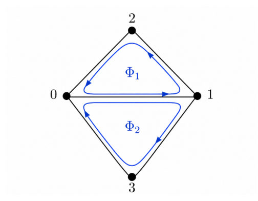
<figcaption class="paper-figure-caption"><b>Fig 1.</b> FIG. 1. Diamond graph with the oriented fluxes Φ1 and Φ2 associated with the cycles C1 = (0, 1, 2, 0) and C2 = (0, 1, 3, 0), respectively.</figcaption>
</figure>
<figure class="paper-figure-card">
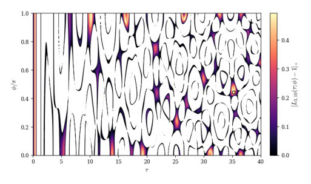
<figcaption class="paper-figure-caption"><b>Fig 2.</b> FIG. 3. Leggett–Garg violation regions for the cycle C10. The color scale represents the positive violation excess [L3,10(τ; ϕ)− 1]+ as a function of τ and ϕ/π. White regions do not violate the macrorealist bound, while the black curves mark L3,10(τ; ϕ) = 1. The largest value in the displayed window is L3,10 ≃1.4931, attained near τ ≃35.2 and ϕ/π ≃0.445.</figcaption>
</figure>
<figure class="paper-figure-card">
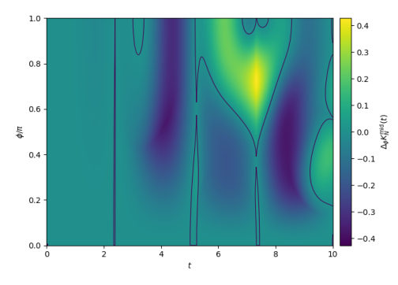
<figcaption class="paper-figure-caption"><b>Fig 3.</b> FIG. 2. Finite-time flux control of measurement back-action on the cycle C6. The color scale represents the midpoint con- trast ∆ϕKmid 6 (t) = K6,ϕ(t/2, t) −K6,0(t/2, t) as a function of t and ϕ/π. Positive and negative values indicate enhancement and suppression relative to zero flux, respectively. The black curves mark ∆ϕKmid 6 (t) = 0.</figcaption>
</figure>
<figure class="paper-figure-card">
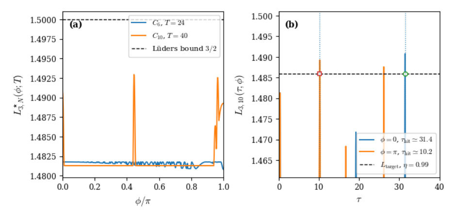
<figcaption class="paper-figure-caption"><b>Fig 4.</b> FIG. 4. Flux dependence of the Leggett–Garg violation strength and its temporal accessibility for C6 and C10. (a) Optimized functional L⋆ 3,N(ϕ; T) for C6 with T = 24 and C10 with T = 40. The dashed line marks the Lüders bound L3 = 3/2. (b) Leggett–Garg functional for C10 at zero and half flux. The horizontal dashed line marks L(10) target(0.99; 40) = 1 + 0.99V ⋆ 3,10(0; 40). The first target crossings occur at τ (10) hit (0; 0.99, 40) ≃31.4 and τ (10) hit (π; 0.99, 40) ≃10.2, giving S10(0.99; 40) ≃3.1.</figcaption>
</figure>
</div>

<p><strong>Summary.</strong> The paper demonstrates that magnetic fluxes threading cycles in chiral quantum walks act as a controllable resource to engineer local measurement back-action. By analyzing the two-time statistics, the authors show flux can drive the system to saturate fundamental bounds like the Lüders bound. This establishes gauge-invariant flux control over temporal quantum correlations.</p>
<p><strong>Why it may be interesting.</strong> This work provides a concrete mechanism—flux engineering—to manipulate non-classical temporal correlations (LGI violation) in quantum transport models, which is highly relevant for understanding measurement limitations in open quantum systems.</p>
<details>
<summary>Detailed structure</summary>
<p><strong>Main problem.</strong> The paper investigates how gauge-invariant magnetic fluxes control measurement back-action and temporal quantum correlations (Leggett-Garg inequalities) in chiral continuous-time quantum walks.</p>
<p><strong>Main result.</strong> Flux can be engineered to saturate the Lüders bound ($L_3 = 3/2$) by reducing dynamics to a specific Krylov subspace, establishing flux as a resource for controlling local measurement back-action.</p>
<p><strong>Method.</strong> The analysis involves deriving exact two-time statistics using rooted return amplitudes and performing short-time expansions of correlation functions related to the Kolmogorov inconsistency.</p>
<p><strong>Model / system.</strong> The system is chiral continuous-time quantum walks (CTQWs) on a graph, governed by a Hamiltonian incorporating oriented Peierls phases ($   heta_{jk}$). The study focuses on measurements performed at a single vertex using a dichotomic observable.</p>
<p><strong>Key observables.</strong> Measurement back-action ($K_
u$), Leggett-Garg functional ($L_3$), and the rooted return amplitude $A_
u(t; \Phi)$.</p>
<p><strong>Important parameters / regimes.</strong> The external fluxes ($\Phi$) threading cycles in the graph, time ($t$), and measurement times ($\alpha t$).</p>
<p><strong>Assumptions / limitations.</strong> The analysis assumes a localized initial state $|
u
angle$ and relies on short-time expansions for correlation functions.</p>
<p><strong>Figures summary.</strong> Figures illustrate flux dependence of back-action contrast over time and show phase diagrams mapping Leggett-Garg violation against applied fluxes.</p>
<p><strong>Paper structure.</strong> The paper progresses by defining the CTQW model with gauge-invariant fluxes, deriving exact two-time statistics from return amplitudes, analyzing short-time expansions to find flux dependence, and finally demonstrating how this control can saturate fundamental bounds like the Lüders bound.</p>
</details>
<details>
<summary>Abstract</summary>
<p>Gauge-invariant fluxes control interference in chiral continuous-time quantum walks. We investigate how they affect sequential measurements at a single vertex, using a dichotomic observable that distinguishes return to that vertex from occupation of its complement. For a walker initially localized at the measured vertex, the complete two-time statistics, including measurement back-action and Leggett--Garg correlators, are determined exactly by the return amplitude, connecting temporal correlations to the local spectral measure and gauge-invariant closed-walk interference. At short times, the leading disturbance is independent of the Peierls phases, whereas flux sensitivity enters at higher orders through interference among closed walks. We further identify a graph-independent sufficient mechanism for saturating the Lüders bound: flux can reduce the rooted dynamics to a balanced two-dimensional Krylov subspace with equal spectral weights, yielding a constructive flux-engineering criterion for attaining the Lüders bound of $3/2$ at finite times. The mechanism is realized exactly on a two-flux diamond graph, where destructive interference renders additional rooted modes dark and the local back-action depends on relative combinations of the two independent fluxes. For flux-threaded cycles, an exact winding-number expansion reveals a parity-dependent onset: the leading flux contrast occurs generically at order $t^N$ for even cycles and $t^{2N}$ for odd cycles. Across the cycles examined, flux can either enhance the maximal Leggett--Garg violation or shift strong violations to earlier measurement times, with half flux driving the four-site cycle to the Lüders bound. These results establish gauge-invariant flux as a resource for engineering local measurement back-action and temporal quantum correlations.</p>
</details>
<p><sub><a href="#top">↑ back to top</a></sub></p>

<p><a id="paper-2608.12752"></a></p>
<h3 id="levitation-of-a-yig-sphere-using-a-magnetic-paul-trap-towards-strongly-coupled-quantum-magno-mechanics"><a href="http://arxiv.org/abs/2608.12752v1">Levitation of a YIG sphere using a magnetic Paul trap - towards strongly coupled quantum magno-mechanics</a></h3>
<p><strong>Authors:</strong> A. O. Yakymenko, S. Das, J. Twamley<br>
<strong>Type:</strong> both · <strong>Category:</strong> other · <strong>PDF:</strong> <a href="https://arxiv.org/pdf/2608.12752v1">https://arxiv.org/pdf/2608.12752v1</a><br>
<strong>Analysis basis:</strong> full PDF text, analyzed in chunks
<strong>Topic relevance:</strong> 🔥 <code>analog quantum simulation</code> <strong>4/5</strong> · <code>quantum measurements</code> <strong>2/5</strong> · <code>quantum optics experiment</code> <strong>2/5</strong> · <code>QC/QI experiment</code> <strong>1/5</strong> · <code>Tavis-Cummings &amp; cavity-many-emitter</code> <strong>1/5</strong> · <code>driven-dissipative phase transition</code> <strong>1/5</strong> · <code>methods for driven-dissipative</code> <strong>1/5</strong></p>
<div class="figure-strip-hint">↔ Scroll figures horizontally</div>
<div class="paper-figures-scroll">
<figure class="paper-figure-card">
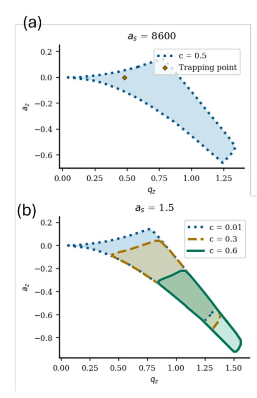
<figcaption class="paper-figure-caption"><b>Fig 1.</b> FIG. 1. We study the conditions for stability of the levitation of the magnet in the magnetic Paul trap, so that we can understand the pa- rameter values for the best trapping. We note that this stability anal- ysis is more complex than for an ion trap, as the magnet has tilting degrees of freedom, which are not present in an ion. We plot the numerically estimated fundamental stability region on the [az −qz] plane. az (qz) quantifies the strength of the static (time-dependent) trapping fields. We choose fixed values of as, which quantifies the li- brational dynamics, and fixed values for c, which quantifies the cou- pling strength between the librational and translational motion. c can be...</figcaption>
</figure>
<figure class="paper-figure-card">
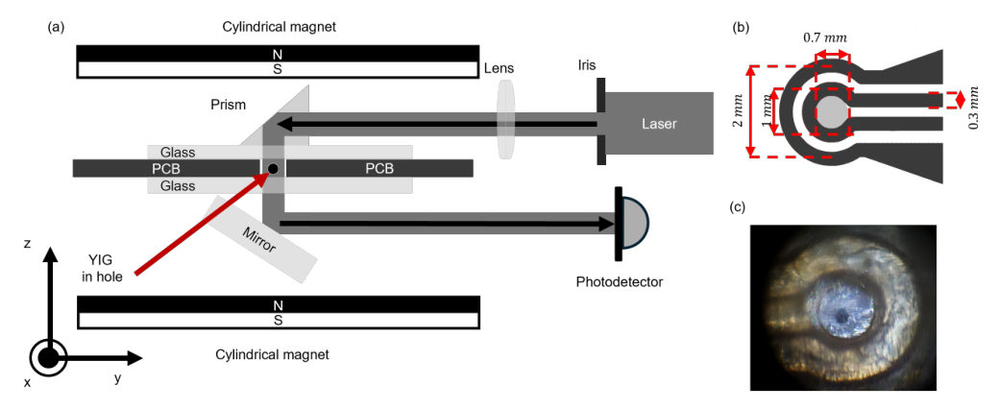
<figcaption class="paper-figure-caption"><b>Fig 2.</b> FIG. 2. Experimental setup for levitating a YIG sphere using a magnetic Paul trap and measuring motion using optical detection. a) We trap the YIG using a combination of a time-dependent magnetic field delivered by circulating currents flowing through electrodes on a printed circuit board and a static magnetic field generated by permanent magnets. The YIG is prevented from falling out from the trapping region by covering PCB hole with glass cover slides. We detect the motion by shining laser light down through the PCB hole and onto a photodiode. We use a lens to focus the light at the YIG’s location, to amplify the motional signal at the photodetector. b) Photo of loaded YIG in the MPT</figcaption>
</figure>
<figure class="paper-figure-card">
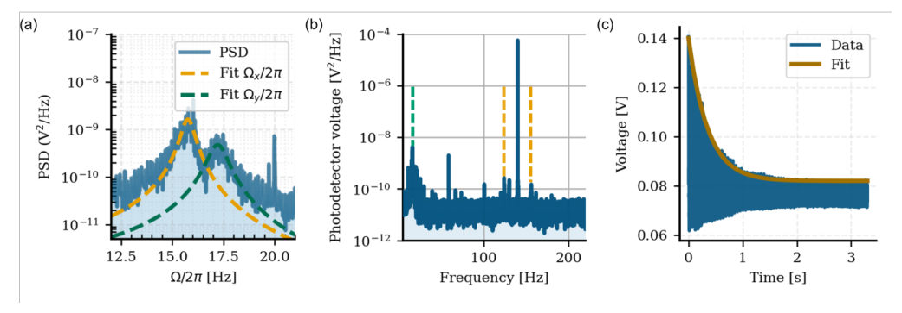
<figcaption class="paper-figure-caption"><b>Fig 3.</b> FIG. 3. Characterizing motion of the trapped in MPT YIG. We measure the motional PSD of trapped YIG in MPT with parameters I1ac = 0.48 ARMS, I2ac = 1 ARMS, I1dc = 56 mA, I2dc = 113 mA, Ω/2π = 140Hz. a) The secular modes of the translation motion. We fitted the data with a Lorentzian and obtained the frequencies fx = 15.8Hz and fy = 17.2Hz along with Q-factors: Qx = 25,Qy = 18. b) Motional spectrum of trapped YIG. The spectrum consists of secular frequencies marked by a green dashed line, the micromotion mode at trap current frequency fm = 140Hz, and sidebands fm ± fx and fm ± fy that are marked by yellow dashed line. We conclude that these frequencies correspond to the x and y modes because...</figcaption>
</figure>
<figure class="paper-figure-card">
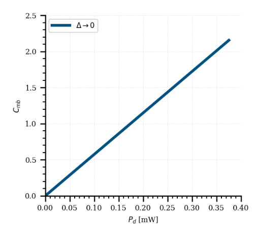
<figcaption class="paper-figure-caption"><b>Fig 4.</b> FIG. 4. Magnon enhanced cooperativity depending on the driving magnon power: We plot the cooperativity between the magnon and center of mass motion of levitated YIG for zero detuning. When Cmb exceeds unity, the two modes are strongly coupled and quantum effects can be become dominant.</figcaption>
</figure>
</div>

<p><strong>Summary.</strong> The authors successfully demonstrated the stable levitation of a YIG sphere using a magnetic Paul trap at room temperature. They analyzed the coupled dynamics between the mechanical motion (phonons) and the spin wave excitations (magnons). This work establishes a platform for investigating strongly coupled quantum magno-mechanics, with potential applications in quantum information processing.</p>
<p><strong>Why it may be interesting.</strong> This work bridges macroscopic mechanical trapping (Paul traps) with microscopic quantum excitations (magnons), providing an experimentally realized platform to study cavity QED concepts in a solid-state magnetic system, relevant for quantum sensing and information processing.</p>
<details>
<summary>Detailed structure</summary>
<p><strong>Main problem.</strong> The work demonstrates stable levitation of a YIG sphere using a magnetic Paul trap, aiming to realize strongly coupled quantum magno-mechanical systems.</p>
<p><strong>Main result.</strong> Stable trapping was achieved at room temperature with measured Q-factors ($\sim 25$) and secular frequencies (15.8 Hz, 17.2 Hz), and theoretical estimates suggest achievable magnon-phonon cooperativity above unity.</p>
<p><strong>Method.</strong> The study combines classical stability analysis using Floquet theory on Mathieu equations with experimental measurements of mechanical motion via backscattered light detection.</p>
<p><strong>Model / system.</strong> The system involves a YIG sphere (soft magnet) trapped by a magnetic Paul trap. The physics couples the center-of-mass mechanical motion (phonons) to the quantized spin waves (magnons), described by coupled Hamiltonians.</p>
<p><strong>Key observables.</strong> Q-factors ($\sim 25$), secular frequencies (15.8 Hz, 17.2 Hz), and magnon-phonon cooperativity ($C_{mb}$).</p>
<p><strong>Important parameters / regimes.</strong> Room temperature operation, magnetic field gradients, and coupling strengths between mechanical and magnonic modes.</p>
<p><strong>Assumptions / limitations.</strong> The analysis assumes the classical limit for soft magnets (YIG) and employs small-motion approximations to derive the equations of motion.</p>
<p><strong>Figures summary.</strong> Figures illustrate the stability diagram in parameter space (Fig. 1), the experimental setup using neodymium magnets (Fig. 2), and the measured power spectral density showing trapped oscillations (Fig. 3).</p>
<p><strong>Paper structure.</strong> The paper progresses from deriving the full equations of motion for the coupled system, simplifying them to a vector Mathieu equation for stability analysis, presenting the theoretical framework for magnon-phonon coupling, and concluding with experimental measurements confirming stable levitation and quantifying quantum coupling potential.</p>
</details>
<details>
<summary>Abstract</summary>
<p>Magnetic levitation offer passive levitation of massive objects for use in advanced inertia sensors, for the generation of non-classical macroscopic motional states, and towards the table-top testing of low energy gravity with quantum mechanics. Magnons, a quanta of spin wave, couple to many physical quantities and strongly to electromagnetic fields, even at room temperature. In this work we demonstrate the stable trapping of a small YIG sphere using a magnetic Paul trap. We present a classical stability analysis of a magnetic Paul trap and show the stability diagram for all mechanical degrees of freedom. We show that coupling between librational and translational modes changes the stability region. We experimentally levitate the soft magnet yttrium iron garnet at room temperature obtaining Q-factors of $\sim25$ and secular frequencies $15.8$ Hz and $17.2$ Hz. We provide numerical estimates of the achievable enhanced coupling between the center-of-mass motion and excited magnon modes, with a cooperativity above unity despite strong mechanical damping, indicating potential applications in quantum information processing, quantum interconnects and quantum memories.</p>
</details>
<p><sub><a href="#top">↑ back to top</a></sub></p>

<p><a id="paper-2608.13561"></a></p>
<h3 id="experimental-quantum-key-distribution-in-an-indefinite-causal-order"><a href="http://arxiv.org/abs/2608.13561v1">Experimental Quantum Key Distribution in an Indefinite Causal Order</a></h3>
<p><strong>Authors:</strong> Yann Valibouse, Martí Cladera-Rosselló, Michael Antesberger, Hector Spencer-Wood, Kyrylo Simonov, Patrik Sund, Mathieu Bozzio, Philip Walther, Lee A. Rozema<br>
<strong>Type:</strong> both · <strong>Category:</strong> quantum information and computing · <strong>PDF:</strong> <a href="https://arxiv.org/pdf/2608.13561v1">https://arxiv.org/pdf/2608.13561v1</a><br>
<strong>Analysis basis:</strong> full PDF text, analyzed in chunks
<strong>Topic relevance:</strong> 🔥 <code>QC/QI experiment</code> <strong>4/5</strong> · <code>quantum measurements</code> <strong>3/5</strong> · <code>quantum optics experiment</code> <strong>3/5</strong> · <code>interference shaping light</code> <strong>1/5</strong></p>
<div class="figure-strip-hint">↔ Scroll figures horizontally</div>
<div class="paper-figures-scroll">
<figure class="paper-figure-card">
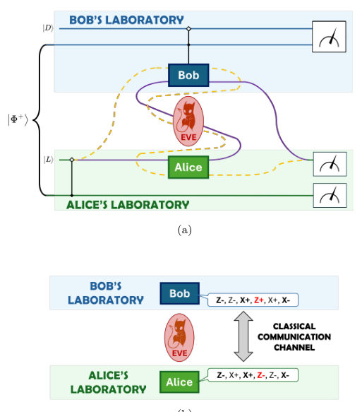
<figcaption class="paper-figure-caption"><b>Fig 1.</b> FIG. 1. (a) Alice and Bob independently choose a mea- surement basis and obtain two binary outcomes from each successful event: a polarization outcome, which contributes to the raw key, and a control outcome associated with the output port of their respective interferometers. The latter encodes information about the coherence between the alter- native causal-order branches of the quantum SWITCH. (b) During the reconciliation stage, Alice and Bob publicly disclose their basis choices and control outcomes, while keep- ing the polarization outcomes private. Key bits are retained only when both parties selected the same basis (highlighted in bold). In the absence of an eavesdropper, the control...</figcaption>
</figure>
<figure class="paper-figure-card">
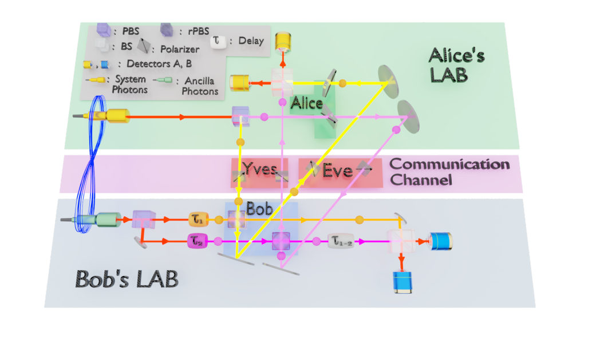
<figcaption class="paper-figure-caption"><b>Fig 2.</b> FIG. 2. Experimental realization of the quantum SWITCH with a path-coherence-preserving measurement performed in Bob’s laboratory. The yellow and blue detectors correspond to measurements performed by Alice and Bob, respectively. The protocol admits two distinct locations at which an eavesdropper may intercept the communication, denoted by Eve and Yves, corresponding to the two possible insertion points within the alternative causal-order branches. In the present experiment, only the eavesdropping strategy associated with Eve is implemented. On Alice, side, the encoding of the key happens in the darker green area with polarizers while for Bob, the encoding happens via its rotated PBSs (PBS...</figcaption>
</figure>
<figure class="paper-figure-card">
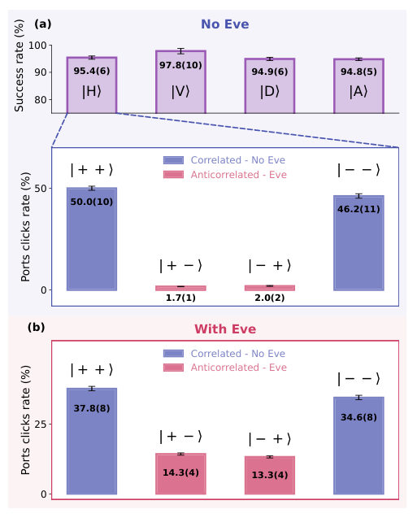
<figcaption class="paper-figure-caption"><b>Fig 3.</b> FIG. 3. (a) Measured protocol performance in the absence of an eavesdropper. The teal bars show the probability that Alice and Bob obtain the same polarization outcome and therefore establish a shared key bit. The insets show the probability of observing anti-correlated control outcomes, cor- responding to false-positive eavesdropping detections. (b) Measured probability of observing anti-correlated control outcomes in the presence of Eve. In this measurement, Alice prepares the state |H⟩and Eve’s polarizers are set at θ = 45◦, corresponding to a measurement in the diagonal basis. The theoretical detection probability is pdetect|0,0(45◦) = 25%, while the experimentally observed value is...</figcaption>
</figure>
<figure class="paper-figure-card">
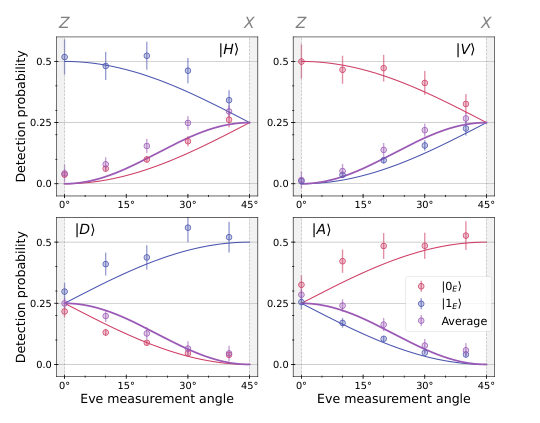
<figcaption class="paper-figure-caption"><b>Fig 4.</b> FIG. 4. Detection probability as a function of Eve’s polar- izer angle θ for the four BB84 signal states (2). Red and blue data correspond to the conditional detection probabil- ities Pdetect|0,µ,b and Pdetect|1,µ,b, associated with Eve’s two possible measurement outcomes. Purple data show the detec- tion probability obtained after averaging over Eve’s outcomes. Solid curves are the theoretical predictions.</figcaption>
</figure>
<figure class="paper-figure-card">
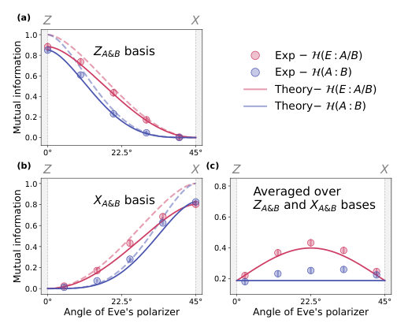
<figcaption class="paper-figure-caption"><b>Fig 5.</b> FIG. 5. (a)–(b) Mutual information between the different parties when Alice and Bob use (a) the computational basis and (b) the Hadamard basis. Dashed curves correspond to the theoretical predictions, while solid curves show the same predictions renormalized using the experimentally observed maximum mutual information. (c) Mutual information averaged over all four BB84 signal states (2) as a function of Eve’s polarizer angle θ. The mutual information between Alice and Bob is constant and equal to H(A : B) = −1 + 3</figcaption>
</figure>
</div>

<p><strong>Summary.</strong> The paper reports an experimental demonstration of Quantum Key Distribution using the principle of Indefinite Causal Order, realized via a photonic quantum SWITCH. This approach allows for eavesdropper detection by monitoring coherence in a control qubit without forcing Alice and Bob to publicly reveal any part of their raw key material. It proves that ICO can enhance QKD security protocols.</p>
<p><strong>Why it may be interesting.</strong> This work directly addresses fundamental concepts in quantum information theory—causality and resource quantification—by proposing a novel physical implementation (the quantum SWITCH) to enhance cryptographic security protocols beyond current standards.</p>
<details>
<summary>Detailed structure</summary>
<p><strong>Main problem.</strong> To demonstrate an experimental protocol for Quantum Key Distribution (QKD) that leverages the concept of Indefinite Causal Order (ICO) to detect eavesdropping without sacrificing any key bits.</p>
<p><strong>Main result.</strong> The experiment provides a proof-of-principle that ICO can be exploited to achieve eavesdropper detection by monitoring the control qubit, which is superior to standard QKD methods requiring public key comparison and bit discarding.</p>
<p><strong>Method.</strong> The protocol adapts BB84-like QKD using a photonic quantum SWITCH to embed Alice's and Bob's operations. Eavesdropping is detected by measuring coherence loss in the control qubit rather than comparing raw key material.</p>
<p><strong>Model / system.</strong> The system utilizes a photonic quantum SWITCH, where the path degree of freedom controls the indefinite causal order between measurement/preparation operations (Alice and Bob). The polarization degree of freedom carries the key information.</p>
<p><strong>Key observables.</strong> Average eavesdropper detection probability ($0.15 \pm 0.02$ per shared qubit) measured via the control qubit state, specifically monitoring population in $|-
angle_c$.</p>
<p><strong>Important parameters / regimes.</strong> The protocol's success hinges on a new measurement technique allowing polarization readout inside the SWITCH without destroying path coherence.</p>
<p><strong>Assumptions / limitations.</strong> Currently, the implementation is limited by post-selection required for measurements within the quantum SWITCH, meaning it is not yet a fully secure QKD protocol.</p>
<p><strong>Figures summary.</strong> The notes do not provide specific figure summaries beyond general references to figures illustrating joint probabilities and mutual information calculations in related theoretical analyses.</p>
<p><strong>Paper structure.</strong> The paper moves from establishing the theoretical framework of ICO using the quantum SWITCH, adapting it to BB84-like QKD, detailing the measurement techniques required for local readout, presenting the experimental results demonstrating eavesdropper detection, and concluding with a discussion of limitations.</p>
</details>
<details>
<summary>Abstract</summary>
<p>In quantum physics the order in which different operations occur can be placed in superposition. The resulting processes have an indefinite causal order and are both of fundamental interest and can be viewed as a novel quantum resource that enables a variety of new protocols. Here we report an experimental implementation of one such protocol, where we perform BB84-like quantum cryptography by placing Alice and Bob's measurement-and-preparation operations in a photonic quantum SWITCH. By embedding Alice and Bob within the quantum SWITCH, the protocol achieves an average eavesdropper detection probability of $0.15 \pm 0.02$ per shared qubit, with eavesdropper detection performed through measurements of the control qubit rather than by comparing the key. Unlike the standard BB84 and related schemes, which detect eavesdropping by publicly revealing and discarding a fraction of the raw key, our approach requires no disclosure of key material: every retained qubit can, in principle, be tested for eavesdropping while remaining available for key generation. The experiment relies on a new measurement technique that allows the polarization of a photon to be measured inside the quantum SWITCH without destroying path coherence. Although the present implementation does not yet constitute a secure quantum key distribution protocol, owing to the post-selection required for measurements within the quantum SWITCH, it provides a proof of principle that indefinite causal order can be exploited to detect eavesdropping without sacrificing key bits.</p>
</details>
<p><sub><a href="#top">↑ back to top</a></sub></p>

<p><a id="paper-2608.13207"></a></p>
<h3 id="ion-trap-on-borosilicate-substrate-with-integrated-femtosecond-laser-written-waveguide"><a href="http://arxiv.org/abs/2608.13207v1">Ion trap on borosilicate substrate with integrated femtosecond-laser-written waveguide</a></h3>
<p><strong>Authors:</strong> Jakob Wahl, Alexander Zesar, Philipp Hurdax, Marco Schmauser, Victoria Schwab, Michael Pasquini, Marco Valentini, Clemens Rössler, Thomas Monz, Bernhard Lamprecht, Klemens Schüppert, Philipp Schindler<br>
<strong>Type:</strong> experiment · <strong>Category:</strong> other · <strong>PDF:</strong> <a href="https://arxiv.org/pdf/2608.13207v1">https://arxiv.org/pdf/2608.13207v1</a><br>
<strong>Analysis basis:</strong> full PDF text, analyzed in chunks
<strong>Topic relevance:</strong> 🔥 <code>QC/QI experiment</code> <strong>4/5</strong> · <code>analog quantum simulation</code> <strong>3/5</strong> · <code>quantum optics experiment</code> <strong>2/5</strong> · <code>interference shaping light</code> <strong>1/5</strong> · <code>quantum measurements</code> <strong>1/5</strong></p>
<div class="figure-strip-hint">↔ Scroll figures horizontally</div>
<div class="paper-figures-scroll">
<figure class="paper-figure-card">
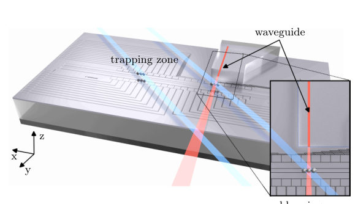
<figcaption class="paper-figure-caption"><b>Fig 1.</b> FIG. 1. Concept of the ion trap. The aluminum trap electrodes are patterned on a borosilicate substrate. Patterned segmented DC electrodes allow for shuttling of the ion between the trapping and the addressing zone. On top of the traps’ surface, another borosilicate glass block is bonded that contains a femtosecond laser-written waveguide for light with 729nm wavelength (red beam), inscribed at a distance to the trap surface that is in-plane with the trapping position of the ion. The geometry and size of the optics block is chosen such that ions can be trapped in the addressing zone in front of the waveguide, but also at a position millimeter distances away from the glass, allowing for...</figcaption>
</figure>
<figure class="paper-figure-card">
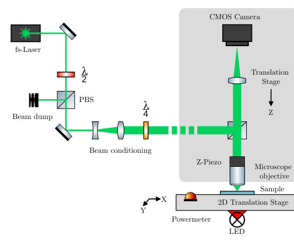
<figcaption class="paper-figure-caption"><b>Fig 2.</b> FIG. 2. Schematic of the femtosecond laser setup used for waveguide writing and laser ablation.</figcaption>
</figure>
<figure class="paper-figure-card">
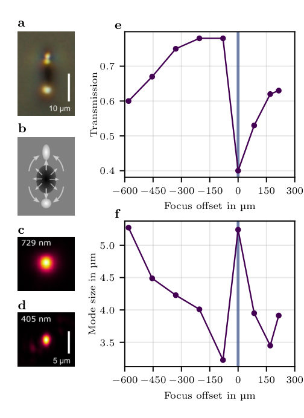
<figcaption class="paper-figure-caption"><b>Fig 3.</b> FIG. 3. Overview of waveguide morphology, mode pro- files, and writing-depth optimization in borosilicate glass. (a) Transmission microscope image showing two spatially sepa- rated guiding regions (“upper” and “lower”) formed within a single written track. (b) Schematic illustration of the inferred refractive-index distribution and dominant material redistri- bution during waveguide formation. (c,d) Near-field intensity profiles of a lower waveguide optimized and characterized at (c) 729 nm and (d) 405 nm. (e) Measured transmission at a wavelength of 729 nm as a function of the focus offset, de- fined as the difference between writing depth and objective correction depth. (f) Effective mode...</figcaption>
</figure>
<figure class="paper-figure-card">
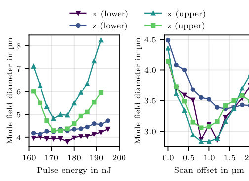
<figcaption class="paper-figure-caption"><b>Fig 4.</b> FIG. 4. Mode field diameter of waveguides located above and below the focal plane, measured along the x- and z-directions. The measurement are indicated with symbols, and are con- nected with lines as a guide for the eye. (a) Mode field diam- eter (MFD) as a function of the pulse energy at a scan offset ∆x = 1.5 µm and 3 overscans. (b) MFD as a function of ∆x at a fixed pulse energy of 177 nJ and N = 8 overscans. All structures were written at a scan speed of 50 mm/s.</figcaption>
</figure>
<figure class="paper-figure-card">
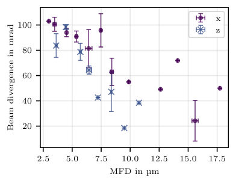
<figcaption class="paper-figure-caption"><b>Fig 5.</b> FIG. 5. Beam divergence as a function of the mode field diameter (MFD) for the two transverse directions. The data represents multiple measurements within an MFD of 1 µm and indicates the mean value and standard error.</figcaption>
</figure>
</div>

<p><strong>Summary.</strong> This paper presents an advanced ion trap platform built on borosilicate glass featuring an integrated waveguide written by femtosecond lasers. This architecture solves the challenge of routing optical signals in large-scale trapped-ion quantum processors. By demonstrating trapping and coherent operations using this on-chip light delivery, it offers a robust and scalable route for future quantum computing devices.</p>
<p><strong>Why it may be interesting.</strong> This work directly addresses a major engineering bottleneck in trapped-ion quantum computing—the integration of photonics. For theorists studying open quantum systems or quantum optics, this provides a concrete platform for modeling light-matter interactions on chip at scale.</p>
<details>
<summary>Detailed structure</summary>
<p><strong>Main problem.</strong> The primary challenge addressed is developing a scalable platform for trapped-ion quantum computing that requires robust, on-chip delivery of optical light to address individual qubits.</p>
<p><strong>Main result.</strong> The authors successfully demonstrated an end-to-end system integrating an ion trap on borosilicate glass with an integrated, low-loss waveguide capable of delivering coherent light for qubit operations.</p>
<p><strong>Method.</strong> They fabricated the platform using femtosecond laser writing (FLW) to create waveguides bonded atop a surface-electrode ion trap and validated functionality in a cryogenic trapped-ion system.</p>
<p><strong>Model / system.</strong> The physical system is an ion trap built on borosilicate glass, featuring aluminum electrodes and an integrated waveguide. The light delivery mechanism physically separates the optical layer from the electrode substrate, enabling compatibility with silicon integration.</p>
<p><strong>Key observables.</strong> Coherent Rabi oscillations driven by 729 nm light delivered through the waveguide; measurement of stray electric fields showing slow drift over hours.</p>
<p><strong>Important parameters / regimes.</strong> Single-mode low-loss guidance at 729 nm and 405 nm; curved waveguides maintained down to a radius of curvature of 6 mm.</p>
<p><strong>Assumptions / limitations.</strong> The architecture relies on bonding an optically structured block onto the trap surface, and that positive refractive index changes induced by femtosecond laser exposure are sufficient for guiding weakly guided modes.</p>
<p><strong>Figures summary.</strong> Figures illustrate the concept showing the integrated waveguide positioned in-plane with the ion addressing zone; other figures detail waveguide writing setups and mode profile tuning based on focus offset.</p>
<p><strong>Paper structure.</strong> The paper progresses from establishing the need for scalable optical access to presenting the physical platform, detailing the fabrication of low-loss waveguides, and finally validating the entire system through trapping, shuttling, and coherent quantum operations.</p>
</details>
<details>
<summary>Abstract</summary>
<p>We present an ion-trap platform on borosilicate glass with an integrated femtosecond-laser-written waveguide for on-chip light delivery. The optical layer is physically separated from the electrode substrate and bonded atop the trap, remaining compatible with silicon-based integration. We engineer single-mode low-loss guidance at 729 nm with tunable mode-field diameter and achieve low-loss curved waveguides down to a radius of curvature of 6 mm. We also extend single-mode operation to a wavelength of 405 nm. The fabrication process is compatible with the industrial fabrication of a single-metal-layer surface-electrode trap, including active fiber alignment and bonding. We validate the platform in a cryogenic trapped-ion system with $^{40}$Ca$^+$, demonstrating trapping, shuttling the ion to a zone in front of the waveguide, and coherent operations driven by 729 nm light delivered through the integrated waveguide. We characterize the effect of the exposed dielectric on the ion and measure stray electric fields that show slow drift at a timescale of hours. The architecture is compatible with hybrid micro-optics (e.g. pick-and-place lenses) to realize single ion addressing and provides a robust, scalable route to integrated light delivery for trapped-ion devices.</p>
</details>
<p><sub><a href="#top">↑ back to top</a></sub></p>

<p><a id="paper-2608.12858"></a></p>
<h3 id="shots-to-approximate-solution-scaling-in-neutral-atom-quantum-optimization"><a href="http://arxiv.org/abs/2608.12858v1">Shots-to-Approximate-Solution Scaling in Neutral-Atom Quantum Optimization</a></h3>
<p><strong>Authors:</strong> Junwoo Jung, Jaewook Ahn<br>
<strong>Type:</strong> both · <strong>Category:</strong> other · <strong>PDF:</strong> <a href="https://arxiv.org/pdf/2608.12858v1">https://arxiv.org/pdf/2608.12858v1</a><br>
<strong>Analysis basis:</strong> full PDF text, analyzed in chunks
<strong>Topic relevance:</strong> 🔥 <code>Rydberg arrays</code> <strong>4/5</strong> · 🔥 <code>analog quantum simulation</code> <strong>4/5</strong> · <code>QC/QI experiment</code> <strong>2/5</strong> · <code>quantum measurements</code> <strong>1/5</strong></p>
<div class="figure-strip-hint">↔ Scroll figures horizontally</div>
<div class="paper-figures-scroll">
<figure class="paper-figure-card">
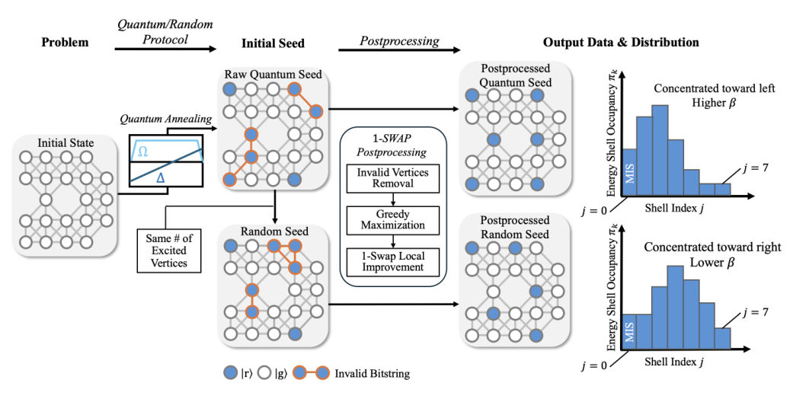
<figcaption class="paper-figure-caption"><b>Fig 1.</b> FIG. 1. Density-controlled shots-to-approximate-solution workflow. An initial King’s-lattice atom array is evolved by a Rydberg quantum-annealing schedule, producing raw quantum seeds (occupation bitstrings). To construct a density- controlled null model, random seeds are sampled with the same mean excitation density as the quantum data. Both seeds are passed through the identical postprocessing pipeline: invalid adjacent excitations are removed, the independent set is greedily maximized, and a local 1-swap improvement is applied. The resulting postprocessed outputs define shell distributions over shell index j, where j = 0 corresponds to the MIS manifold, summarized by an effective quality...</figcaption>
</figure>
<figure class="paper-figure-card">
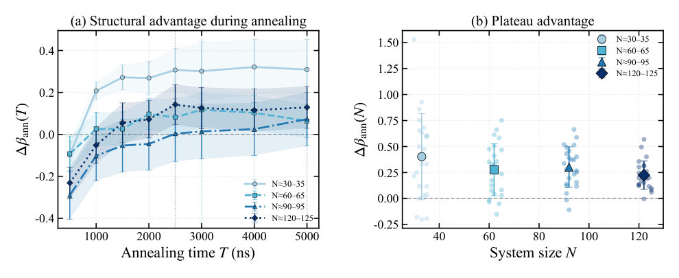
<figcaption class="paper-figure-caption"><b>Fig 2.</b> FIG. 2. Plateau behavior and annealing advantage with excitation-matched random baseline. (a) ∆βann(T) = βann(T) −βrand(p(ann) exc (T)) as a function of annealing time for all four size groups (bin 2; see Fig. 3 for the full hardness dependence). The random baseline is evaluated at the per-instance, per-T excitation rate p(ann) exc (T), controlling for the density effect at every point of the sweep. In all groups, ∆βann(T) rises from negative or near-zero values at short times and saturates at a positive plateau near T ⋆≈2500–5000 ns (group-dependent). (b) Per-instance ∆βann at the plateau (T = 5000 ns), for the 24 instances of bins 1–4 in each size group, as a function of system size N....</figcaption>
</figure>
<figure class="paper-figure-card">
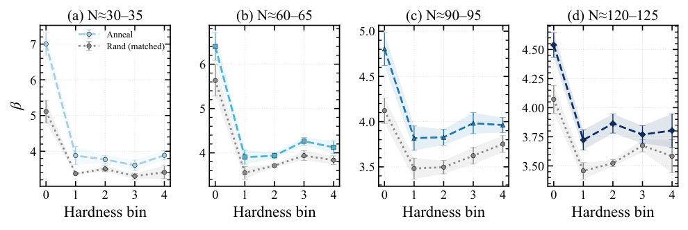
<figcaption class="paper-figure-caption"><b>Fig 3.</b> FIG. 3. Annealing quality parameter and excitation-matched random baseline across hardness bins. βann (blue squares) and the excitation-matched random baseline βrand(p(ann) exc ) (gray circles, dashed) as a function of hardness bin at T = 5000 ns, shown separately for each size group. The excitation rate p(ann) exc is measured per instance from experimental shots, so each random-baseline point is density-matched to the corresponding annealing measurement. Annealing consistently exceeds the matched baseline across all bins and system sizes, with the gap ∆βann = βann −βrand(p(ann) exc ) remaining positive throughout. The lowest-hardness bin (bin 0) is shown for completeness but is excluded...</figcaption>
</figure>
<figure class="paper-figure-card">
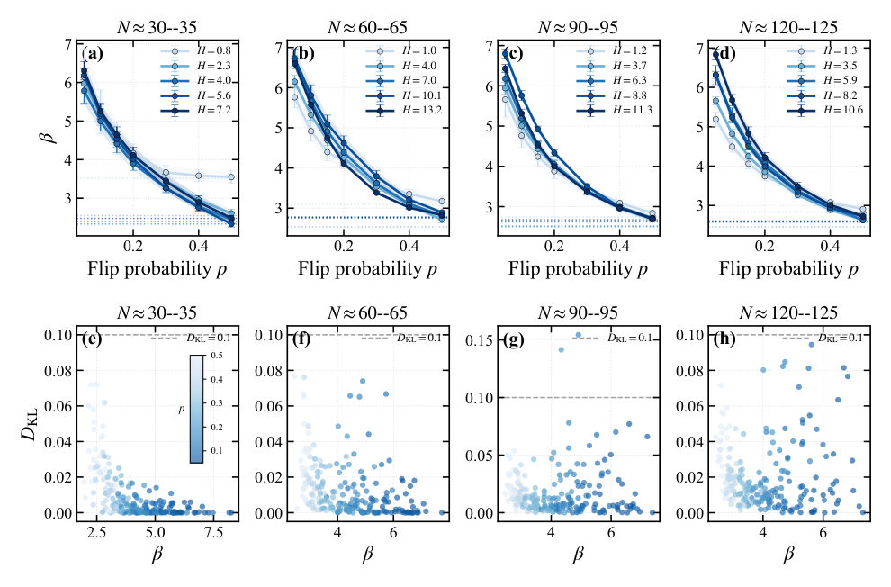
<figcaption class="paper-figure-caption"><b>Fig 4.</b> FIG. 4. Shell-model sensitivity and KL-divergence validation. (a)–(d) Postprocessed β as a function of flip probability p for controlled mock data, constructed by independently flipping each bit of the exact MIS solution with probability p and applying the ℓ= 1 postprocessing pipeline, shown separately for each size group. Dotted lines indicate the excitation-matched random baseline βrand for each hardness bin. (e)–(h) DKL(Pemp∥Pfit) between the empirical postprocessed shell distribution and the fitted shell model as a function of the inferred β, for mock data across all four size groups. Color encodes flip probability p; darker points correspond to lower p and hence higher solution...</figcaption>
</figure>
<figure class="paper-figure-card">
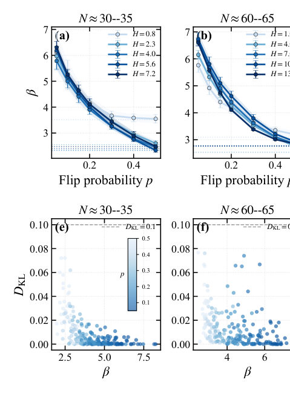
<figcaption class="paper-figure-caption"><b>Fig 5.</b> Figure 5(c) makes this target dependence explicit from the opposite perspective. At the exact target, STS(r = 1; β) decreases rapidly with increasing β, and the sepa- ration between size groups grows with system size. The measured annealing plateau values β(g) ann lie to the right of the excitation-matched random baselines βrand, implying fewer required shots at fixed N. The faint vertical lines mark the plateau values β(g) ann, at which the exponential fits in panel (a) are evaluated. The large reduction visi-</figcaption>
</figure>
</div>

<p><strong>Summary.</strong> This work introduces the STS metric to rigorously measure how many quantum shots are needed to find approximate solutions to NP-hard problems like MIS using neutral atoms. By comparing results against an excitation-matched random baseline, the authors prove that quantum annealing provides a genuine advantage over classical expectations. The findings delineate specific regimes where quantum resources yield practical benefits versus when classical heuristics suffice.</p>
<p><strong>Why it may be interesting.</strong> It provides a rigorous, quantifiable benchmark for assessing true quantum speedup in optimization problems implemented on Rydberg arrays, distinguishing genuine algorithmic advantages from mere hardware noise or local correlations.</p>
<details>
<summary>Detailed structure</summary>
<p><strong>Main problem.</strong> The core problem is developing an operational metric, STS(r), to quantify whether neutral-atom quantum optimization protocols exhibit genuine concentration toward low-energy solution structures.</p>
<p><strong>Main result.</strong> Quantum annealing consistently outperforms a random baseline, demonstrating enhanced concentration beyond what can be explained by mere excitation density. The required shot cost scales differently for near-exact versus relaxed target solutions.</p>
<p><strong>Method.</strong> The authors introduce the Shots-to-Approximate-Solution metric, STS(r), and analyze postprocessed outputs using a degeneracy-weighted shell distribution model ($\pi_j \propto d_{\alpha-j} e^{-eta j}$).</p>
<p><strong>Model / system.</strong> The study uses programmable Rydberg-atom arrays to implement the Maximum Independent Set (MIS) problem. The analysis relies on modeling output quality via a shell index ($j$) derived from postprocessing the raw quantum bitstrings.</p>
<p><strong>Key observables.</strong> Shots-to-Approximate-Solution metric ($    ext{STS}(r)$), effective concentration parameter ($eta$), and the residual advantage $\Deltaeta_{	ext{ann}}$.</p>
<p><strong>Important parameters / regimes.</strong> Approximation ratio ($r$), system size ($N$), and the shell index $j$ relative to the optimal MIS size $\alpha$.</p>
<p><strong>Assumptions / limitations.</strong> The analysis focuses on postprocessed outputs rather than raw bitstrings due to blockade violations, necessitating a random baseline control. The shell distribution is modeled using maximum entropy principles.</p>
<p><strong>Figures summary.</strong> Figures compare quantum annealing shot costs against random baselines and classical reference times for different target ratios ($r=1$ vs. relaxed targets), showing distinct scaling behaviors.</p>
<p><strong>Paper structure.</strong> The paper introduces the STS metric, models output quality via shell distributions ($eta$), establishes a random baseline control by matching excitation density, and then analyzes two regimes (near-exact vs. relaxed) to quantify quantum advantage.</p>
</details>
<details>
<summary>Abstract</summary>
<p>Whether neutral-atom quantum optimization protocols exhibit genuine concentration toward low-energy solution structure remains an open question. Here, we introduce a shots-to-approximate-solution metric, STS(r), where r denotes the approximation ratio, and evaluate it using postprocessed outputs modeled by a degeneracy-weighted shell distribution governed by a single effective parameter, $β$, that quantifies concentration toward near-optimal independent sets. To extract the genuine concentration effect in the quantum data, we apply identical postprocessing to both experimental bitstrings and randomly generated bitstrings with matched excitation density, thereby constructing an excitation-matched random baseline. Experiments on programmable Rydberg-atom arrays with system sizes up to 125 sites show that quantum annealing consistently exceeds the random baseline, demonstrating enhanced concentration toward low-energy solution structure beyond what can be attributed solely to excitation density. The results further reveal two distinct target-dependent regimes. For near-exact targets with $r \approx 1$, the required shot count grows exponentially with system size and is reduced at the same exponential level by quantum annealing within the shell-model description. By contrast, for relaxed targets, the shot cost becomes effectively constant, and the corresponding quantum enhancement diminishes, with the classical postprocessing heuristic alone reaching the target in order-unity attempts. Together, these results establish an operational method for quantifying quantum optimization performance and clarify the regimes under which quantum approaches can yield practical benefits.</p>
</details>
<p><sub><a href="#top">↑ back to top</a></sub></p>

<p><a id="paper-2608.13399"></a></p>
<h3 id="field-widened-multimode-interferometer-with-long-time-bin-delay-using-a-multi-pass-herriott-cell"><a href="http://arxiv.org/abs/2608.13399v1">Field-Widened Multimode Interferometer with Long Time-Bin Delay Using a Multi-Pass Herriott Cell</a></h3>
<p><strong>Authors:</strong> Ramy Tannous, Stéphane Vinet, Kaylee Sherk, Kimia Mohammadi, Thomas Jennewein<br>
<strong>Type:</strong> both · <strong>Category:</strong> quantum information and computing · <strong>PDF:</strong> <a href="https://arxiv.org/pdf/2608.13399v1">https://arxiv.org/pdf/2608.13399v1</a><br>
<strong>Analysis basis:</strong> full PDF text, analyzed in chunks
<strong>Topic relevance:</strong> 🔥 <code>interference shaping light</code> <strong>4/5</strong> · <code>quantum optics experiment</code> <strong>3/5</strong> · <code>QC/QI experiment</code> <strong>1/5</strong> · <code>free-space correlated emission</code> <strong>1/5</strong> · <code>methods for driven-dissipative</code> <strong>1/5</strong></p>
<div class="figure-strip-hint">↔ Scroll figures horizontally</div>
<div class="paper-figures-scroll">
<figure class="paper-figure-card">
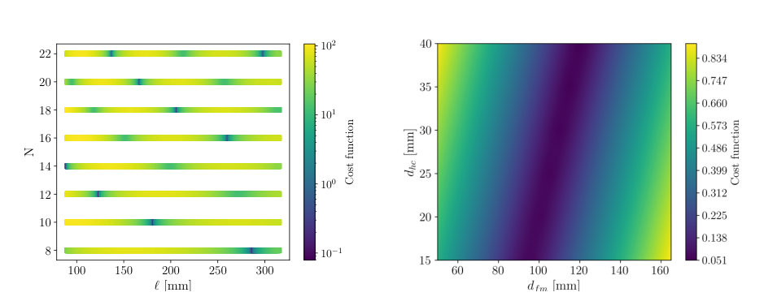
<figcaption class="paper-figure-caption"><b>Fig 1.</b> FIG. 2: (a) Analytical optimization of the HC to be an imaging system, the colour bar</figcaption>
</figure>
<figure class="paper-figure-card">
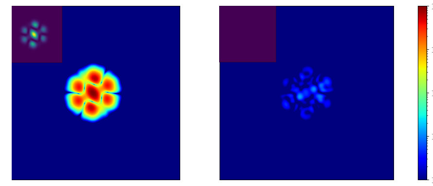
<figcaption class="paper-figure-caption"><b>Fig 2.</b> FIG. 3: (Ray tracing simulation, constructive and destructive interference intensities in</figcaption>
</figure>
<figure class="paper-figure-card">
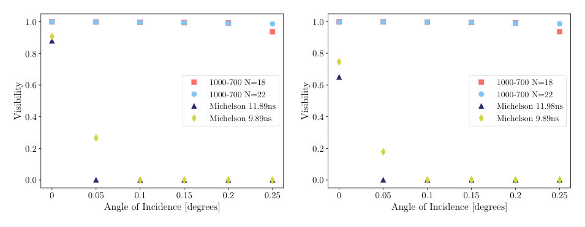
<figcaption class="paper-figure-caption"><b>Fig 3.</b> FIG. 4: Ray tracing results of a varying angle of incidence test with a Gaussian single</figcaption>
</figure>
<figure class="paper-figure-card">
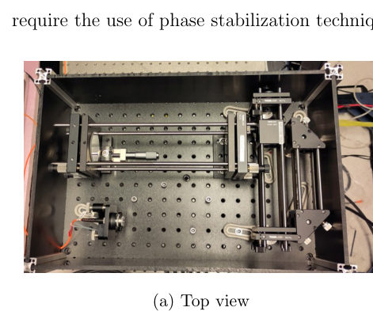
<figcaption class="paper-figure-caption"><b>Fig 4.</b> FIG. 5: (a) Top view of the HC interferometer setup. (b) Horizontally spaced spots</figcaption>
</figure>
<figure class="paper-figure-card">
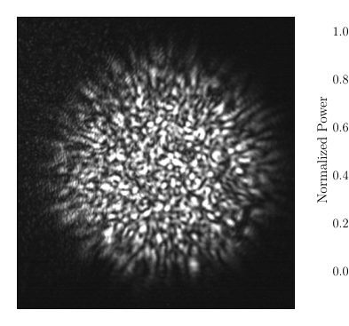
<figcaption class="paper-figure-caption"><b>Fig 5.</b> FIG. 6: (a) Highly multimode beam used for visibility tests with a long coherence</figcaption>
</figure>
</div>

<p><strong>Summary.</strong> The paper presents a novel field-widened interferometer design using a multi-pass Herriott cell to overcome signal degradation in free-space optics. By combining advanced ray tracing with experimental validation, the authors demonstrate that this architecture maintains high interference visibility for large time delays (up to 12 ns) and wide viewing angles. This makes it a highly promising component for robust quantum communication networks.</p>
<p><strong>Why it may be interesting.</strong> This work directly addresses hardware limitations for quantum communication protocols by providing a robust, passive optical architecture that maintains coherence over long temporal delays in turbulent or pointing-error prone free-space channels.</p>
<details>
<summary>Detailed structure</summary>
<p><strong>Main problem.</strong> The primary challenge addressed is maintaining high interference visibility for spatially multimode optical beams when large time delays are introduced, which is critical for free-space quantum communication links.</p>
<p><strong>Main result.</strong> The authors successfully demonstrated a field-widened interferometer using a multi-pass Herriott cell that maintains high interference visibility ($\approx 0.9$ to $0.98$) even with path length differences up to 12 ns and large field-of-view angles.</p>
<p><strong>Method.</strong> The work combines analytical ray transfer matrix methods for initial design optimization with advanced non-sequential Gaussian Beamlet Decomposition (GBD) ray tracing simulations, validated by pulsed laser time-bin measurements.</p>
<p><strong>Model / system.</strong> The system is a field-widened, multimode interferometer configured in a Michelson arrangement, utilizing a multi-pass Herriott cell to achieve long optical path separations within a compact physical footprint. It is designed for applications like quantum key distribution (QKD) over free space.</p>
<p><strong>Key observables.</strong> Interference Visibility ($V$), Time-Bin Separation ($\sim 12$ ns), and Field-of-View ($0.4^\circ$).</p>
<p><strong>Important parameters / regimes.</strong> Path length difference ($\geq 10 	ext{ ns}$), large time delays, and angular deviations (pointing errors).</p>
<p><strong>Assumptions / limitations.</strong> Initial ray tracing methods neglect wavefront distortions, polarization, and phase effects; the final results rely on GBD modeling to account for these complex wave phenomena.</p>
<p><strong>Figures summary.</strong> Figures illustrate the conceptual Herriott cell design, analytical optimization of mirror parameters ($\ell$, $d_{fm}$), and experimental measurements showing high visibility maintenance across single-mode and multi-mode inputs at large time delays.</p>
<p><strong>Paper structure.</strong> The paper progresses from establishing the need for passive alternatives to adaptive optics in free space. It details the theoretical design using ray tracing, validates this with GBD simulations accounting for wavefronts, and concludes with experimental demonstrations using both CW lasers and pulsed sources to measure time-bin visibility.</p>
</details>
<details>
<summary>Abstract</summary>
<p>Interference of optical signals in free-space channels requires optical receivers to support many spatial modes due to atmospheric turbulence, typically necessitating adaptive optics systems. Field-widened interferometers offer a passive alternative, making them particularly attractive for time-bin encoded signals with delays on the order of one nanosecond. Here, we demonstrate a field-widened, multimode interferometer design that achieves a high interference visibility for spatially multimode beams with large time bin separations. The interference of the multimode beams is enabled using a multi-pass Herriott cell that enables a very long path separation with a small form-factor. The design is tested using both numerical ray-tracing simulations and proof-of-principle demonstrations. We create a prototype interferometer with a path length difference of 12ns and determine that it maintains a high interference visibility with a large field-of-view of $0.4^{\circ}$.</p>
</details>
<p><sub><a href="#top">↑ back to top</a></sub></p>

<p><a id="paper-2608.12897"></a></p>
<h3 id="observation-of-time-domain-braiding-of-non-abelian-anyons-at-math188math-state"><a href="http://arxiv.org/abs/2608.12897v1">Observation of Time-Domain Braiding of Non-Abelian Anyons at $ν= 5/2$ State</a></h3>
<p><strong>Authors:</strong> Tomer Alkalay, Jinhong Park, Minseong Oh, Changki Hong, Jun-Young M. Lee, Priya Tiwari, Tapas Senapati, Vladimir Umansky, Moty Heiblum, H. -S. Sim<br>
<strong>Type:</strong> experiment · <strong>Category:</strong> strongly correlated electrons · <strong>PDF:</strong> <a href="https://arxiv.org/pdf/2608.12897v1">https://arxiv.org/pdf/2608.12897v1</a><br>
<strong>Analysis basis:</strong> full PDF text, analyzed in chunks
<strong>Topic relevance:</strong> 🔥 <code>Full counting statistics</code> <strong>4/5</strong> · <code>quantum measurements</code> <strong>3/5</strong> · <code>analog quantum simulation</code> <strong>1/5</strong> · <code>correlated / nonlocal dissipation</code> <strong>1/5</strong> · <code>methods for driven-dissipative</code> <strong>1/5</strong></p>
<div class="figure-strip-hint">↔ Scroll figures horizontally</div>
<div class="paper-figures-scroll">
<figure class="paper-figure-card">
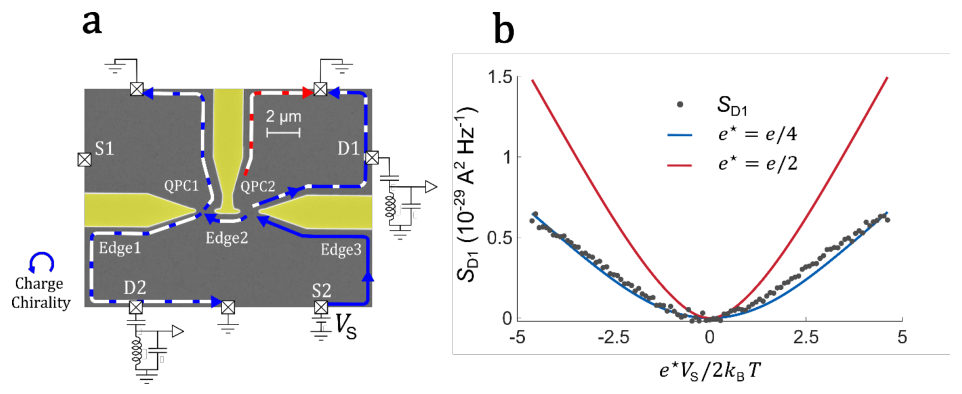
<figcaption class="paper-figure-caption"><b>Fig 1.</b> Figure 1 | Partitioning dilute charged anyons in a two-QPC geometry. (a) False-color scanning electron</figcaption>
</figure>
<figure class="paper-figure-card">
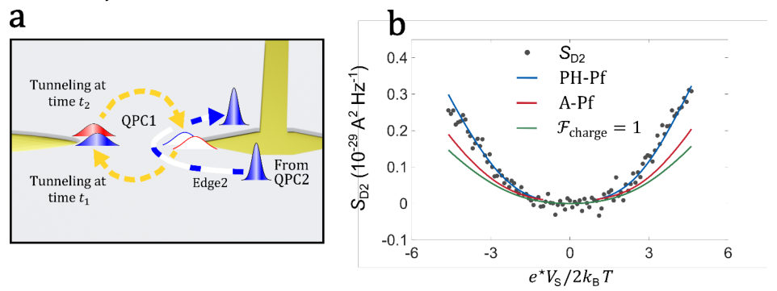
<figcaption class="paper-figure-caption"><b>Fig 2.</b> Figure 2 | Time-domain braiding of charged anyons. (a) Illustration of the time-domain braiding at QPC1.</figcaption>
</figure>
<figure class="paper-figure-card">
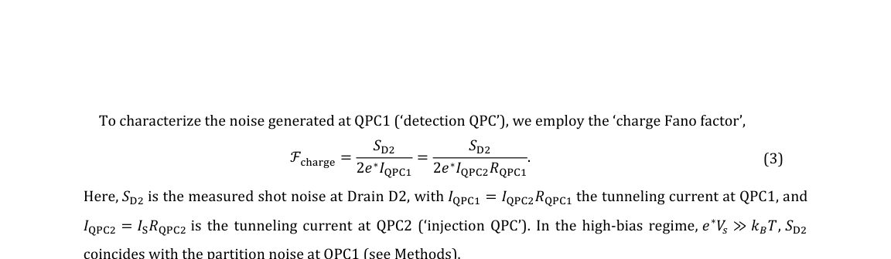
<figcaption class="paper-figure-caption"><b>Fig 3.</b> Figure 2b shows the measured shot noise, 𝑆𝑆D2, for one representative device (corresponding measurements</figcaption>
</figure>
<figure class="paper-figure-card">
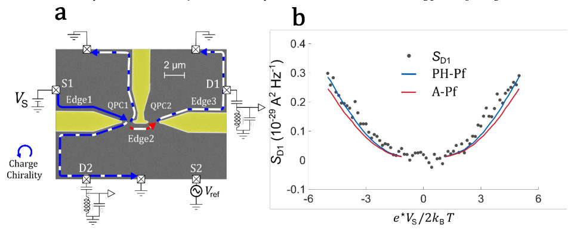
<figcaption class="paper-figure-caption"><b>Fig 4.</b> Figure 3 | Time-domain braiding of neutral anyons. (a) Experimental configuration. False-color SEM image</figcaption>
</figure>
<figure class="paper-figure-card">

<figcaption class="paper-figure-caption"><b>Fig 5.</b> Figure 3b shows the measured shot noise that is compared with the theoretical predictions of 𝑆𝑆D1 =</figcaption>
</figure>
</div>

<p><strong>Summary.</strong> The paper reports evidence for non-Abelian anyons by measuring time-domain braiding signatures in the $\nu=5/2$ fractional quantum Hall state. Using current fluctuation measurements on edge modes, they independently probe both charged and neutral quasiparticles. The agreement between these two distinct measurements strongly supports the predicted topological order (PH-Pf) over simpler models.</p>
<p><strong>Why it may be interesting.</strong> This work provides a concrete experimental realization using mesoscopic transport measurements to probe topological order parameters (non-Abelian statistics), which is highly relevant for understanding emergent quantum phenomena in condensed matter systems.</p>
<details>
<summary>Detailed structure</summary>
<p><strong>Main problem.</strong> The primary challenge is providing experimental evidence for non-Abelian braiding statistics of anyons, which has been difficult to observe.</p>
<p><strong>Main result.</strong> The authors report independent measurements of both charged (downstream) and neutral (upstream) current fluctuations that provide strong evidence supporting the presence of non-Abelian anyons in the $\nu=5/2$ fractional quantum Hall state.</p>
<p><strong>Method.</strong> The study uses weak partitioning of highly dilute one-dimensional edge modes via two Quantum Point Contacts to measure noise signatures corresponding to time-domain braiding effects.</p>
<p><strong>Model / system.</strong> The physical system is the Fractional Quantum Hall (FQH) state at filling factor $\nu=5/2$, analyzed using the 'particle-hole Pfaffian' topological order. The measurement probes quasiparticles exhibiting non-Abelian statistics, contrasting them with Abelian anyons.</p>
<p><strong>Key observables.</strong> Charge Fano factor ($\mathcal{F}_{	ext{charge}}$) and Neutral Fano factor ($\mathcal{F}_{	ext{neutral}}$), derived from measured shot noise ($S_{D2}$ and $S_{D1}$).</p>
<p><strong>Important parameters / regimes.</strong> Filling factor $\nu=5/2$, fractional charge $e^* = e/4$, and the comparison between theoretical predictions for PH-Pf and A-Pf topological orders.</p>
<p><strong>Assumptions / limitations.</strong> The analysis assumes that observed excess noise cannot be explained by an incoherent Joule heating model, ruling out this simpler physical mechanism.</p>
<p><strong>Figures summary.</strong> Figure 2 compares measured shot noise ($S_{D2}$) against theoretical predictions for PH-Pf and A-Pf edges. Figure 3 shows the neutral noise measurement ($S_{D1}$), while supplementary figures compare excess noise to heating model predictions, showing a significant discrepancy.</p>
<p><strong>Paper structure.</strong> The paper first establishes the experimental setup using two QPCs to measure charge and neutral current fluctuations. It then analyzes the charged sector, finding evidence for non-Abelian statistics via $\mathcal{F}_{	ext{charge}}$. Subsequently, it analyzes the neutral sector ($\mathcal{F}_{	ext{neutral}}$) and concludes by ruling out an incoherent heating model as the source of excess noise.</p>
</details>
<details>
<summary>Abstract</summary>
<p>Unlike elementary particles, which obey either bosonic or fermionic exchange statistics, certain quasiparticles, known as anyons, are predicted to exhibit Abelian or non-Abelian braiding statistics. While braiding Abelian anyons modifies the wavefunction by a 'statistical phase', braiding non-Abelian anyons implements a unitary transformation of the state within a degenerate subspace of states. Experimental evidence of non-Abelian braiding has thus far remained elusive. Here, we report a 'time-domain braiding' signature of non-Abelian anyons in the $ν= 5/2$ fractional quantum Hall state, by extending our previously demonstrated approach with Abelian anyons at $ν= 1/3$. Our approach is based on measurements of the current fluctuations arising from weak partitioning of a highly dilute one-dimensional edge mode. We independently probe the partition noise of the downstream charged mode and also that of the upstream neutral mode. These independent measurements agree with our theoretical predictions for 'time-domain braiding' of the downstream Abelian and the upstream non-Abelian anyons, respectively, in the 'particle-hole Pfaffian' topological order. Together, these results provide evidence for the presence of non-Abelian anyons.</p>
</details>
<p><sub><a href="#top">↑ back to top</a></sub></p>

<p><a id="paper-2608.13325"></a></p>
<h3 id="phase-information-transfer-by-post-selection-in-spin-mechanical-assisted-magnetometry"><a href="http://arxiv.org/abs/2608.13325v1">Phase information transfer by post-selection in Spin--Mechanical assisted magnetometry</a></h3>
<p><strong>Authors:</strong> Raúl Coto, Hugo Molinares, Vitalie Eremeev<br>
<strong>Type:</strong> theory · <strong>Category:</strong> quantum information and computing · <strong>PDF:</strong> <a href="https://arxiv.org/pdf/2608.13325v1">https://arxiv.org/pdf/2608.13325v1</a><br>
<strong>Analysis basis:</strong> full PDF text, analyzed in chunks
<strong>Topic relevance:</strong> 🔥 <code>quantum measurements</code> <strong>4/5</strong> · <code>driven-dissipative phase transition</code> <strong>2/5</strong> · <code>Keldysh / 2PI / non-Gaussian methods</code> <strong>1/5</strong> · <code>analog quantum simulation</code> <strong>1/5</strong> · <code>correlated / nonlocal dissipation</code> <strong>1/5</strong> · <code>methods for driven-dissipative</code> <strong>1/5</strong></p>
<div class="figure-strip-hint">↔ Scroll figures horizontally</div>
<div class="paper-figures-scroll">
<figure class="paper-figure-card">
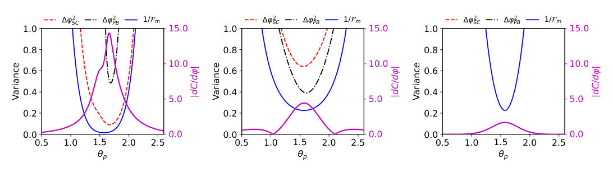
<figcaption class="paper-figure-caption"><b>Fig 1.</b> Figure 1: Left panel: coherent-state |β⟩with amplitude β = 1, center panel: even cat-state |cat⟩∝(|α⟩+ |−α⟩), with |α| = 2; and right panel: thermal-state with mean occupation ¯nth = 0.5. The phase variance is estimated using two different approaches: a semiclassical procedure based on the error-propagation formula (∆φ2 SC) and the Pegg-Barnett formalism for the phase operator (∆ˆφ2 PB). 1/Fm (CR) represents the lowest bound. Parameters used are λ = 0.1, ωmτ = 1, θi = π/2, γ/ωm = 1 G−1, and Bz = 2.7 G.</figcaption>
</figure>
<figure class="paper-figure-card">
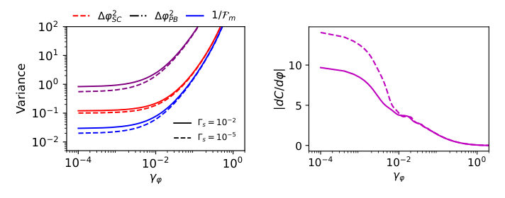
<figcaption class="paper-figure-caption"><b>Fig 2.</b> Figure 2: Dephasing rate impairs the Variance, without a significant impact from the dissipation rate (left panel). Consistenly with our previous observations, |dC/dφ| shows a monotonic decreasing (right panel). We simulate an initial coherent state and set θp = 1.65. γϕ and Γs are scaled by the oscillator frequency. Other parameters are the same as in Fig. 1.</figcaption>
</figure>
<figure class="paper-figure-card">
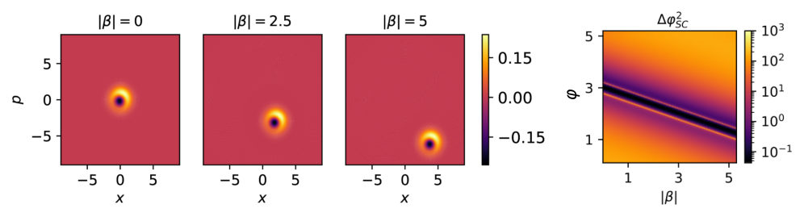
<figcaption class="paper-figure-caption"><b>Fig 3.</b> Figure 3: Wigner function of the MO state is displaced for different values of the initial amplitude |β|. We set the post-selection angle at θp = 1.65, yielding a success probability of 1.5% (left). ∆φ2 SC as a function of the phase φ and the coherent-state amplitude |β| (right). Other parameters are the same as in Fig. 1.</figcaption>
</figure>
<figure class="paper-figure-card">
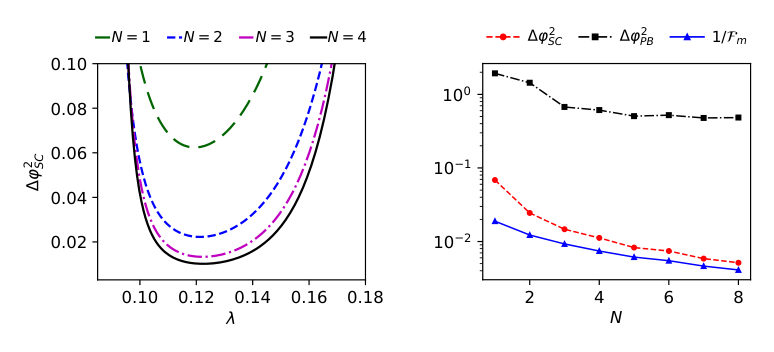
<figcaption class="paper-figure-caption"><b>Fig 4.</b> Figure 4: Variance ∆φ2 SC shows an optimal region as a function of the coupling strength λ. Different numbers of spins (N) coupled to the MO share the same optimal value λ ≃0.12 (left). Variance’s estimators decreases as a function of the number of spins. We set λ = 0.13 (right). Other parameters are: β = 1, ωmτ = 1, θp = 1.65, γ/ωm = 1 G−1 and Bz = 2.7 G.</figcaption>
</figure>
<figure class="paper-figure-card">
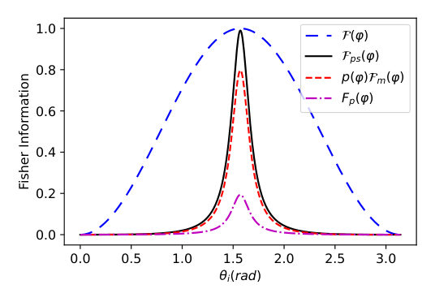
<figcaption class="paper-figure-caption"><b>Fig 5.</b> Figure 5: Quantum Fisher information (QFI) with post-selection Fps(φ) saturates QFI without post-selection F (φ), in a small region of the spin preparation angle θi. Fps(φ) involves contributions from the information obtained from the meter conditioned on successful post-selection p(φ)Fm, while Fp denotes the classical Fisher information associated with the post-selection probability distribution p(φ). Parameters used are λ = 0.1, β = 1, φ = 2.9 rad, ωmt = 1, and θp = θi.</figcaption>
</figure>
</div>

<p><strong>Summary.</strong> This paper develops a theory for transferring phase information from coupled spins to a mechanical oscillator using post-selection as a selective measurement backaction. By comparing various variance estimators against the Quantum Fisher Information, the authors establish diagnostic tools like coherence susceptibility. The work highlights that while post-selection can enhance sensing, one must carefully account for the success probability when interpreting sensitivity gains.</p>
<p><strong>Why it may be interesting.</strong> This work provides a detailed theoretical blueprint for utilizing non-unitary quantum processes (measurement backaction) to enhance sensing capabilities in complex hybrid systems, which is highly relevant to open quantum system dynamics and quantum metrology.</p>
<details>
<summary>Detailed structure</summary>
<p><strong>Main problem.</strong> The study investigates how phase information encoded in a spin system can be selectively transferred to a mechanical oscillator using post-selection as a measurement-induced backaction mechanism for quantum magnetometry.</p>
<p><strong>Main result.</strong> Post-selection successfully transfers phase information from the spins to the MO, but the apparent improvement in sensitivity calculated only on successful events can overestimate true performance due to low success probabilities and discarded data.</p>
<p><strong>Method.</strong> The authors compare multiple diagnostics—Semiclassical variance estimator, Pegg-Barnett quantum estimator, and Quantum Fisher Information (QFI)—to quantify phase transfer efficiency under various environmental conditions.</p>
<p><strong>Model / system.</strong> The system is a hybrid quantum platform consisting of one or more spins coupled to a mechanical oscillator (MO). The dynamics are governed by Hamiltonians incorporating spin-oscillator coupling ($\lambda_0$) and dissipation modeled via a Lindblad master equation.</p>
<p><strong>Key observables.</strong> Phase variance ($\Delta\hat{\varphi}^2$), Quantum Fisher Information ($F_{ps}(\varphi)$), Coherence Susceptibility ($|dC/d\varphi|$), and the success probability $p(\varphi)$.</p>
<p><strong>Important parameters / regimes.</strong> Oscillator quantum coherence, coupling strength ($\lambda_0$), number of spins ($N$), dephasing rate ($\gamma_\phi$), and dissipation rate ($\Gamma_s$).</p>
<p><strong>Assumptions / limitations.</strong> The analysis compares different estimators (SC vs. PB) to determine the best measure of phase transfer; a key limitation noted is that relying solely on successful events overestimates performance.</p>
<p><strong>Figures summary.</strong> Figures compare variance estimates for different initial states (coherent, cat, thermal), show how dephasing degrades accuracy relative to dissipation, and illustrate the decomposition of QFI into components related to post-selection probability and MO state.</p>
<p><strong>Paper structure.</strong> The paper develops a theoretical framework for probabilistic phase estimation in hybrid systems. It introduces coherence susceptibility as a diagnostic tool, decomposes the total QFI after post-selection, and analyzes how different environmental effects (dephasing vs. dissipation) impact the achievable measurement precision.</p>
</details>
<details>
<summary>Abstract</summary>
<p>Quantum information transfer between light-matter-type systems is poised to enable important applications, while also serving as a testbed for theoretical investigation. Such systems can be realized with spins coupled to a mechanical oscillator, a platform that has been extensively studied both theoretically and experimentally. Early demonstrations of quantum information transfer have relied mostly on coherent control. However, measurement-induced backaction has emerged as a strong alternative for quantum control. In this work we use post-selection on the spin system as a selective backaction to refocus spin's phase information onto the mechanical oscillator. We identify physical resources and operating regimes that govern conditional phase transfer, including oscillator quantum coherence, the number of spins, the mechanical initial state, coupling strength, oscillator amplitude, and relaxation. We benchmark different scenarios using the variance as the figure of merit, estimated via two complementary approaches: a semiclassical variance estimator and a Pegg-Barnett quantum estimator. The Cramér-Rao bound is also computed for comparison. The analysis provides a framework for understanding phase transfer in high-dimensional hybrid quantum systems and for measurement-induced backaction used in quantum magnetometry.</p>
</details>
<p><sub><a href="#top">↑ back to top</a></sub></p>

<p><a id="paper-2608.13090"></a></p>
<h3 id="robust-controlled-z-gate-for-rydberg-atoms-based-on-level-crossing-free-echoing-rapid-adiabatic-passage"><a href="http://arxiv.org/abs/2608.13090v1">Robust controlled-Z gate for Rydberg atoms based on level-crossing-free echoing rapid adiabatic passage</a></h3>
<p><strong>Authors:</strong> Yichi Zhang, Zhenqi Bai, Xu Zhao, Hongyan Fan, Ximo Wang, Tiecheng Wang<br>
<strong>Type:</strong> theory · <strong>Category:</strong> other · <strong>PDF:</strong> <a href="https://arxiv.org/pdf/2608.13090v1">https://arxiv.org/pdf/2608.13090v1</a><br>
<strong>Analysis basis:</strong> full PDF text, analyzed in chunks
<strong>Topic relevance:</strong> 🔥 <code>Rydberg arrays</code> <strong>4/5</strong> · <code>QC/QI experiment</code> <strong>2/5</strong> · <code>analog quantum simulation</code> <strong>1/5</strong> · <code>correlated / nonlocal dissipation</code> <strong>1/5</strong> · <code>driven-dissipative phase transition</code> <strong>1/5</strong> · <code>methods for driven-dissipative</code> <strong>1/5</strong></p>
<div class="figure-strip-hint">↔ Scroll figures horizontally</div>
<div class="paper-figures-scroll">
<figure class="paper-figure-card">
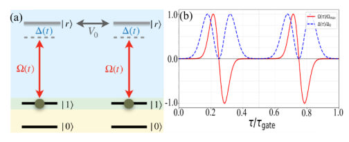
<figcaption class="paper-figure-caption"><b>Fig 1.</b> FIG. 1: Schematic of the pulse design and atomic–evel structure. (a)Atomic level structure of two-atom qubits featuring Rydberg–Rydberg interactions between the |r⟩states. (b)Two identical level-crossing-free pulses. The Rabi frequency Ω(t) exhibits an antisymmetric bipolar structure, crossing zero and changing sign at the pulse center; the detuning ∆(t) has a single-peak symmetric structure, smoothly approaching zero at the beginning and end.</figcaption>
</figure>
<figure class="paper-figure-card">
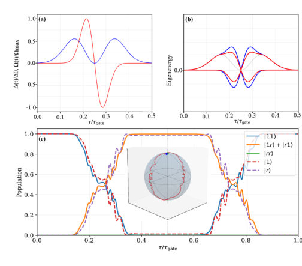
<figcaption class="paper-figure-caption"><b>Fig 2.</b> FIG. 2: Pulse design and system evolution for CZ and CCZ gates. (a) Profile of the pulses, ∆(t) and Ω(t), for CZ and CCZ gate construction. (b) Instantaneous eigenenergies of the Hamiltonian H(t) during one pulse: the blue and red solid lines represent the eigenstates of the two-atom and single-atom systems, respectively. (c) The atomic population evolution during the complete gate time τgate. The solid line represents the states evolution of the double-atom case, and the dashed line represents the single-atom case. Inset: Bloch sphere trajectory of the dynamical state.</figcaption>
</figure>
<figure class="paper-figure-card">
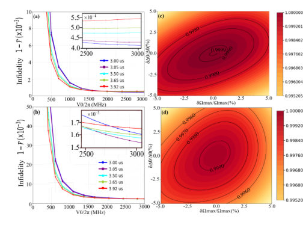
<figcaption class="paper-figure-caption"><b>Fig 3.</b> FIG. 3: Fidelity and parameter robustness analysis for CZ and CCZ gates. (a) and (b): Variation of the infidelity with V0 at different total gate times for the CZ and CCZ gates, respectively. (c) and (d): Contour plots of the fidelity for the CZ and CCZ gates against parameter fluctuations, with Ωmax = (2π) 14.93 MHz, ∆0 = 0.45 Ωmax, τR = 11.1, τD = 8.58 for the CZ gate, and Ωmax = (2π) 13.75 MHz, ∆0 = 0.14 Ωmax, τR = 12, τD = 9.15 for the CCZ gate. The total gate time is 3.92 µs for both gates.</figcaption>
</figure>
</div>

<p><strong>Summary.</strong> The paper proposes a novel, robust method to implement controlled-Z gates on Rydberg atoms using level-crossing-free adiabatic passage. By designing specific pulse sequences with zero net area, the scheme naturally cancels unwanted phases and maintains high fidelity ($>0.999$) even when subjected to realistic experimental noise and dissipation. This makes it a highly promising platform for scalable quantum computation.</p>
<p><strong>Why it may be interesting.</strong> This work represents a significant advancement in quantum gate implementation by providing an architecture (level-crossing-free echoing RAP) that intrinsically suppresses common sources of error like laser intensity noise and dynamical phase accumulation, making it highly practical for large arrays.</p>
<details>
<summary>Detailed structure</summary>
<p><strong>Main problem.</strong> The primary goal is to design a highly robust controlled-Z (CZ) gate for Rydberg atoms that minimizes decoherence and remains functional despite experimental imperfections.</p>
<p><strong>Main result.</strong> The proposed level-crossing-free echoing rapid adiabatic passage scheme achieves very high fidelity ($0.9999$ for CZ) while being remarkably resilient to laser intensity fluctuations ($\pm 2\%$) and detuning offsets ($\pm 1\%$).</p>
<p><strong>Method.</strong> The authors employ a double-pulse sequence utilizing antisymmetric Rabi frequency pulses and symmetric detuning pulses, which naturally cancels the dynamical phase via time-reversal symmetry.</p>
<p><strong>Model / system.</strong> The system involves Rydberg atoms in neutral atom arrays, modeled using the Lindblad master equation to account for dissipation. The gate relies on the strong Rydberg blockade effect restricting dynamics to low-excitation subspaces.</p>
<p><strong>Key observables.</strong> Gate fidelity ($F$), nonadiabatic transition probability ($P_{	ext{nonad}}$), and population evolution during the gate time ($   au_{    ext{gate}}$).</p>
<p><strong>Important parameters / regimes.</strong> Rabi frequency fluctuation ($\pm 2\%$), detuning offset ($\pm 1\%$), blockade interaction strength ($V_0$), and gate duration ($  au_{    ext{gate}}$).</p>
<p><strong>Assumptions / limitations.</strong> The analysis assumes the system can be effectively described by restricting evolution to low-dimensional subspaces due to the Rydberg blockade, and that the pulse structure ensures zero-area conditions.</p>
<p><strong>Figures summary.</strong> Figures illustrate schematic level structures (FIG. 1), pulse profiles for CZ/CCZ gates (FIG. 2(a)), instantaneous eigenenergies showing avoided crossings (FIG. 2(b)), and Bloch sphere trajectories demonstrating controlled phase accumulation.</p>
<p><strong>Paper structure.</strong> The paper develops the theory by comparing adiabatic passage schemes, establishing that level-crossing-free zero-area pulses are superior for robustness. It then applies this framework to simulate CZ/CCZ gates under dissipation using the Lindblad master equation, quantifying fidelity and noise resilience.</p>
</details>
<details>
<summary>Abstract</summary>
<p>We propose a controlled-Z gate scheme for Rydberg atoms based on level-crossing-free echoing rapid adiabatic population transfer. We design antisymmetric Rabi frequency pulses and symmetric detuning pulses, enabling the system to completely avoid level-crossing points throughout the evolution, and the dynamical phase is naturally eliminated by the time-reversal symmetry of the double-pulse sequence. We incorporate dissipative effects through the Lindblad master equation. The numerical simulation yields a two-qubit CZ gate fidelity of 0.9999. When the Rabi-frequency fluctuation is within $\pm 2\%$, and the detuning offset is within $\pm 1\%$, the fidelity can still remain above 0.999. Under the same dissipative model, the three-qubit CCZ gate achieves a fidelity of 0.999. When a single-parameter fluctuation does not exceed $\pm 3\%$, the fidelity is always higher than 0.997. Our scheme requires no laser phase jumps or fast switching operations. The zero-area pulse structure suppresses first-order intensity noise, and the symmetric double-pulse sequence avoids spatially resolved laser switching, making it suitable for parallel gate operations in large-scale neutral-atom arrays.</p>
</details>
<p><sub><a href="#top">↑ back to top</a></sub></p>

<p><a id="paper-2608.13177"></a></p>
<h3 id="entanglement-distribution-and-quantum-storage-of-more-than-8000-modes-over-a-metropolitan-network"><a href="http://arxiv.org/abs/2608.13177v1">Entanglement distribution and quantum storage of more than 8000 modes over a metropolitan network</a></h3>
<p><strong>Authors:</strong> Angelo Gelmini Rodriguez, Louis Nicolas, Théo Sanchez Mejia, Pavel Sekatski, Nicolas Brunner, Towsif Taher, Rob Thew, Philippe Goldner, Mikael Afzelius<br>
<strong>Type:</strong> experiment · <strong>Category:</strong> quantum information and computing · <strong>PDF:</strong> <a href="https://arxiv.org/pdf/2608.13177v1">https://arxiv.org/pdf/2608.13177v1</a><br>
<strong>Analysis basis:</strong> full PDF text, analyzed in chunks
<strong>Topic relevance:</strong> 🔥 <code>QC/QI experiment</code> <strong>4/5</strong> · <code>quantum optics experiment</code> <strong>3/5</strong> · <code>interference shaping light</code> <strong>1/5</strong> · <code>quantum measurements</code> <strong>1/5</strong></p>
<div class="figure-strip-hint">↔ Scroll figures horizontally</div>
<div class="paper-figures-scroll">
<figure class="paper-figure-card">
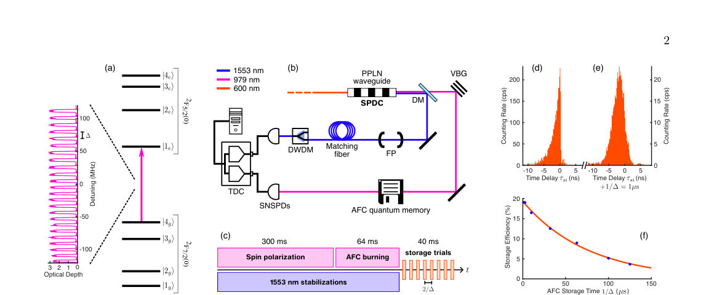
<figcaption class="paper-figure-caption"><b>Fig 1.</b> FIG. 1. Experimental setup. (a) Hyperfine manifolds of the 2F7/2(0) ground and 2F5/2(0) excited states of 171Yb3+ in crystallographic site II. The AFC memory was created on the |4g⟩−|1e⟩transition, the inset shows a measured comb with periodicity ∆= 10 MHz. (b) Simplified schematics of the experimental setup showing the SPDC source (PPLN waveguide), the AFC quantum memory, the optical frequency filters, and the detection setup. The optical filters comprise the volume Bragg grating (VBG), 20 GHz bandwidth, Fabry-P´erot (FP) cavity, 90 MHZ bandwidth, and the dense wavelength-division mulitplexer (DWDM) at channel 31, 75 GHz bandwidth. The detection system consists of superconducting nanowire...</figcaption>
</figure>
<figure class="paper-figure-card">
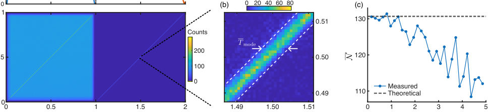
<figcaption class="paper-figure-caption"><b>Fig 2.</b> FIG. 2. Multimode analysis. (a) The measured joint detection matrix as a function of the idler ti and signal ts detection times, with respect to the beginning of the SPDC pump pulse. The background due to accidental coincidences is significantly higher in the transmission window, due to 979-nm signal photons not absorbed by the 171Yb3+:Y2SiO5 crystal. The signal-to- noise ratio is significantly higher in the echo window, owing to the frequency-temporal filtering by the AFC quantum memory [36]. (Top inset) Total signal counts as a function of ts showing the transmission and echo windows. (b) Zoom on the echo correlation line, at a binning of 730 ps. (c) Numerical estimation of the lower...</figcaption>
</figure>
<figure class="paper-figure-card">
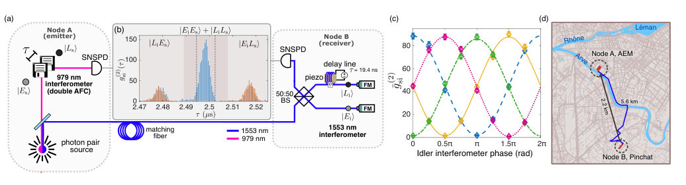
<figcaption class="paper-figure-caption"><b>Fig 3.</b> FIG. 3. Entanglement distribution. (a) Franson-type interferometer setup for measuring energy-time entanglement, em- ploying a fibered Michelson interferometer at 1553 nm and a double-AFC scheme at 979 nm. FM = Faraday mirror. BS = beam splitter. (b) Example of detection histogram for 1/∆= 2.5 µs, showing the typical three correlation peaks of the Franson setup, where only detections in the middle peak reveal entanglement. The blue and red histograms show cases of constructive and destructive interferences. Dashed lines indicate the detection window T mode. (c) The averaged second-order cross-correlation value ¯g(2) si as a function of the idler phase ϕi, for fixed signal phases ϕs = 0...</figcaption>
</figure>
</div>

<p><strong>Summary.</strong> This paper reports on a quantum repeater node using a multimode quantum memory ($  ext{Yb}^{3+}:   ext{Y}_2    ext{SiO}_5$) to overcome rate limitations in quantum communication. They successfully demonstrated the storage and distribution of entanglement across thousands of temporal modes over both laboratory fiber spools and a real metropolitan network link. This advances the feasibility of long-distance, high-capacity quantum networking.</p>
<p><strong>Why it may be interesting.</strong> This work directly addresses scalability issues in quantum networking by demonstrating high-mode count entanglement distribution, which is crucial for realizing large-scale quantum repeaters beyond simple single-photon links.</p>
<details>
<summary>Detailed structure</summary>
<p><strong>Main problem.</strong> The primary challenge is achieving practical, high-rate entanglement distribution over metropolitan distances by overcoming rate limitations inherent in single-mode quantum memories.</p>
<p><strong>Main result.</strong> The authors successfully demonstrated the distribution of entanglement across a 5.66 km metropolitan fiber link while storing and verifying correlations across 8235 temporal modes.</p>
<p><strong>Method.</strong> They utilized an Atomic Frequency Comb (AFC) quantum memory in a quantum repeater node setup, combining it with Spontaneous Parametric Down-Conversion (SPDC) sources and performing Bell tests to confirm entanglement preservation.</p>
<p><strong>Model / system.</strong> The platform uses a multimode quantum memory based on the $ ext{}^{171} ext{Yb}^{3+}:   ext{Y}_2    ext{SiO}_5$ crystal. Entanglement is established between a telecom photon in the fiber and a stored signal photon, with mode capacity quantified via Schmidt decomposition.</p>
<p><strong>Key observables.</strong> CHSH Bell parameter ($S > 2$), effective temporal mode capacity (up to 16340 modes), coincidence detection rates, and interference fringe visibility ($V$).</p>
<p><strong>Important parameters / regimes.</strong> Memory bandwidth of $250	ext{ MHz}$, storage lifetime ($    ext{AFC}$) of $\sim 76.6\ \mu	ext{s}$, and metropolitan distribution distance up to $5.66	ext{ km}$.</p>
<p><strong>Assumptions / limitations.</strong> The analysis relies on the fair-sampling assumption for Bell nonlocality revelation, and there is a noted trade-off between coincidence rate and storage time due to memory efficiency decay.</p>
<p><strong>Figures summary.</strong> Figures illustrate the experimental setup involving SPDC sources, AFC memories, and detection systems. Specific panels show correlation peaks in joint detection histograms and the measurement of entanglement via Bell tests over varying fiber lengths.</p>
<p><strong>Paper structure.</strong> The paper details the physical system (AFC memory + SPDC source), introduces quantitative measures like Schmidt decomposition for mode capacity, demonstrates broadband storage capabilities using fiber spools, and culminates in a field deployment test over a metropolitan network while verifying nonlocality via CHSH tests.</p>
</details>
<details>
<summary>Abstract</summary>
<p>Entanglement generation between telecommunication photons and matter is central to fibre-based quantum repeaters. Achieving practical communication rates requires multiplexing, which multimode quantum memories can provide. Rare-earth-ion ensembles offer large temporal multimode storage by exploiting the numerous spectral channels within their absorption spectrum. Here, we report on a quantum repeater node comprised of a $^{171}$Yb$^{3+}$:Y$_2$SiO$_5$ multimode quantum memory, featuring a 250 MHz bandwidth and a $76.6~μ\mathrm{s}$ lifetime, and a bandwidth-matched entangled photon-pair source. We introduce and validate a quantitative measure of the effective temporal mode capacity using a Schmidt decomposition. With this platform, we demonstrate entanglement between a telecom photon propagating through a 25.3 km fiber spool and a 979 nm photon stored for $125~μ\mathrm{s}$ across 16340 temporal modes. Finally, we report a field deployment distributing entanglement over 5.66 km through the Geneva metropolitan fibre network while storing 8235 modes for $63~μ\mathrm{s}$.</p>
</details>
<p><sub><a href="#top">↑ back to top</a></sub></p>

<p><a id="paper-2608.12559"></a></p>
<h3 id="pulse-engineering-of-quantum-many-body-dynamics-emergent-scar-states-entanglement-and-nonstabilizerness"><a href="http://arxiv.org/abs/2608.12559v1">Pulse Engineering of Quantum Many-Body Dynamics: Emergent Scar States, Entanglement, and Nonstabilizerness</a></h3>
<p><strong>Authors:</strong> Prasant Mallik, Arkaprava Sil, Sudipto Singha Roy<br>
<strong>Type:</strong> theory · <strong>Category:</strong> strongly correlated electrons · <strong>PDF:</strong> <a href="https://arxiv.org/pdf/2608.12559v1">https://arxiv.org/pdf/2608.12559v1</a><br>
<strong>Analysis basis:</strong> full PDF text, analyzed in chunks
<strong>Topic relevance:</strong> 🔥 <code>analog quantum simulation</code> <strong>4/5</strong> · 🔥 <code>scars &amp; prethermalization</code> <strong>4/5</strong> · <code>quantum measurements</code> <strong>1/5</strong></p>
<div class="figure-strip-hint">↔ Scroll figures horizontally</div>
<div class="paper-figures-scroll">
<figure class="paper-figure-card">
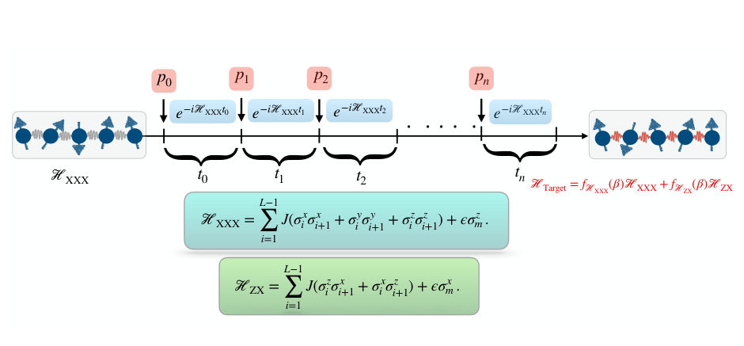
<figcaption class="paper-figure-caption"><b>Fig 1.</b> Figure 1. Schematic illustration of the pulse-driven spin chain and the effective Hamiltonian generated through the pulse-based Hamiltonian engineering protocol.</figcaption>
</figure>
<figure class="paper-figure-card">
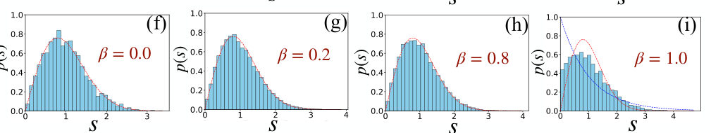
<figcaption class="paper-figure-caption"><b>Fig 2.</b> Figure 2. Level statistics under pulse engineering. (a) Mean level-spacing ratio ⟨r⟩as a function of impurity strength ε for different values of the parameter β. The dashed lines indicate the Poisson limit (⟨r⟩Poiss ≈0.38629) and the GOE limit (⟨r⟩GOE ≈0.53590). In the XXX limit (β = 0), the system shows Poisson-like statistics at weak impurity and crosses over to GOE behavior at stronger ε. For finite β (except β = 1), a similar crossover is observed, indicating that pulse engineering preserves the non-chaotic to chaotic transition across parameters. However, β = 1 limits shows non-chaotic behavior for all impurity strength considered. Here, (b)–(e) show level spacing distribution for ε =...</figcaption>
</figure>
<figure class="paper-figure-card">
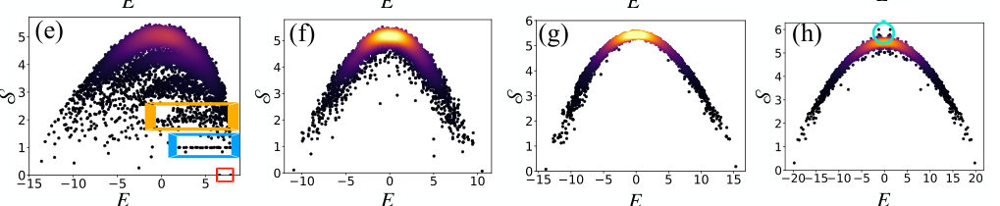
<figcaption class="paper-figure-caption"><b>Fig 3.</b> Figure 3. Energy-resolved distribution of the bipartite entanglement entropy S for eigenstates of the pulse-engineered spin chain. (a)–(d) Correspond to β = 0, 0.3, 0.7, and 1.0, respectively, with ε = 0.03981. (e)–(h) Show the corresponding results for the same values of β at ε = 0.63095. The figures reveal distinct entanglement structures that emerge across the pulse-engineered interpolation. The color scale represents the density of states. Marked boxes of different colors highlight selected energy windows from which atypical eigenstates are chosen for further analysis. Among them the middle one of (a) and (e) (blue box) captures L −1 exact atypical states that we explore in detail....</figcaption>
</figure>
<figure class="paper-figure-card">
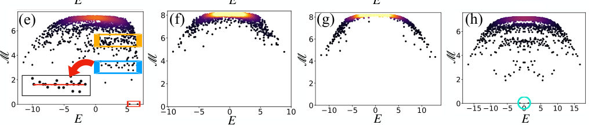
<figcaption class="paper-figure-caption"><b>Fig 4.</b> Figure 4. Energy-resolved distribution of the second-order stabilizer R´enyi entropy M for eigenstates of the pulse-engineered spin chain. (a)–(d) Correspond to β = 0, 0.3, 0.7, and 1.0, respectively, with ε = 0.03981. (e)–(h) Show the corresponding results for the same values of β at ε = 0.63095. The figures reveal distinct nonstabilizer structures that emerge across the pulse-engineered interpolation. The color scale represents the density of states. In this case, the marked boxes highlight the similar set of states that we consider in Fig. 3 for further analysis. Here, we consider L = 11.</figcaption>
</figure>
<figure class="paper-figure-card">
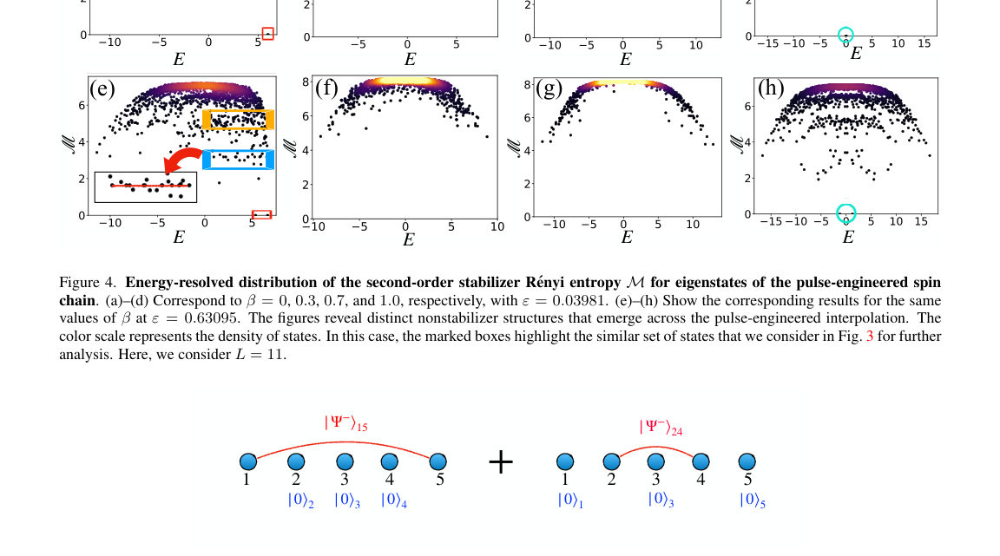
<figcaption class="paper-figure-caption"><b>Fig 5.</b> Figure 5. Schematic representation of one of the special plateau eigenstates for L = 5. The state consists of a coherent superposition of different long-range Bell-pair coverings connecting distant lattice sites, together with fixed product-state configurations on the remaining spins. Such structures resemble RVB-like singlet superpositions.</figcaption>
</figure>
</div>

<p><strong>Summary.</strong> The paper introduces pulse engineering as a powerful technique to construct and study effective Hamiltonians for interacting spin chains. By smoothly interpolating between two distinct models (XXX and ZX), the authors demonstrate controlled access to exotic eigenstates exhibiting specific entanglement patterns. This establishes pulse engineering as a general tool for tuning quantum resources in many-body physics.</p>
<p><strong>Why it may be interesting.</strong> This work directly addresses how external driving fields can be used as a tool to sculpt complex many-body Hamiltonians, offering precise control over emergent quantum features like entanglement structure, which is highly relevant for designing quantum simulators.</p>
<details>
<summary>Detailed structure</summary>
<p><strong>Main problem.</strong> The central challenge is coherently controlling the properties of interacting quantum many-body systems by systematically engineering their Hamiltonians.</p>
<p><strong>Main result.</strong> Pulse engineering provides a versatile framework to generate structured Hamiltonians, allowing for controlled transitions between different types of atypical eigenstates (like VBS states and rainbow scar states) while tracking changes in entanglement and nonstabilizerness.</p>
<p><strong>Method.</strong> The authors use pulse engineering schemes combined with average Hamiltonian theory to derive an effective time-independent Hamiltonian that interpolates between two known models ($\mathcal{H}_{XXX}$ and $\mathcal{H}_{ZX}$).</p>
<p><strong>Model / system.</strong> The system is a one-dimensional spin-1/2 chain with nearest-neighbor interactions and a local impurity. The analysis compares the chaotic Heisenberg (XXX) model to a target ZX Hamiltonian.</p>
<p><strong>Key observables.</strong> Entanglement entropy, stabilizer Rényi entropy, nonstabilizerness ('magic'), and spectral statistics ($\langle r 
angle$).</p>
<p><strong>Important parameters / regimes.</strong> The interpolation parameter $eta$ controls the mixing between the two Hamiltonians; regimes include exchange-dominated ($J/\epsilon > 1$) and impurity-dominated ($J/\epsilon < 1$).</p>
<p><strong>Assumptions / limitations.</strong> The analysis relies on the leading-order Magnus approximation for deriving the effective Hamiltonian.</p>
<p><strong>Figures summary.</strong> Figures illustrate the pulse-driven spin chain, the resulting effective Hamiltonian structure, and show how entanglement/nonstabilizerness evolve across different engineered limits.</p>
<p><strong>Paper structure.</strong> The paper introduces the problem of control in many-body systems, derives the effective Hamiltonian via pulse engineering theory, analyzes the system's spectral properties (chaos vs. non-chaos) across the parameter space, and finally characterizes specific atypical eigenstates and their associated quantum resources.</p>
</details>
<details>
<summary>Abstract</summary>
<p>Understanding and coherently controlling the properties of interacting quantum many-body systems is a central challenge in non-equilibrium quantum physics. While in the past decades, a wide range of many-body Hamiltonians have been introduced to study quantum chaos, atypical eigenstates, and quantum resources, systematically engineering and continuously tuning these properties within a single microscopic model remains largely unexplored. Here, we employ a pulse engineering scheme to construct an effective Hamiltonian that continuously interpolates between a chaotic Heisenberg (XXX) chain with a local impurity and the ZX Hamiltonian. Along this interpolation, we identify several families of analytically tractable atypical eigenstates embedded in the excited-state spectrum with distinct entanglement and nonstabilizerness properties. In the XXX limit, these states exhibit exact plateaus in both entanglement and stabilizer Rényi entropy and correspond to coherent superpositions of long-range valence-bond solid (VBS) states. As the pulse strength increases, the effective Hamiltonians exhibit a hierarchy of new set of approximate entanglement plateaus in the low-energy spectrum. Interestingly, in the fully pulse-engineered ZX limit, we uncover a distinct pair of long-range entangled stabilizer eigenstates, corresponding to rainbow scar states. We further show that pulse engineering preserves the distinct chaotic and non-chaotic regimes of the original model, while that is largely absent in the dynamical generation of entanglement and nonstabilizerness. The pulse-engineered models generate nearly identical quantum resources in both regimes, revealing a partial decoupling between quantum chaos and quantum-resource generation. Our results establish pulse engineering as a versatile framework for generating many-body Hamiltonians with structured eigenstates and tunable quantum resources.</p>
</details>
<p><sub><a href="#top">↑ back to top</a></sub></p>

<p><a id="paper-2608.12867"></a></p>
<h3 id="one-sided-stripe-supersolidity-from-engineered-non-axisymmetric-dipolar-interactions"><a href="http://arxiv.org/abs/2608.12867v1">One-sided stripe supersolidity from engineered non-axisymmetric dipolar interactions</a></h3>
<p><strong>Authors:</strong> Chao Zhang<br>
<strong>Type:</strong> theory · <strong>Category:</strong> quantum gases · <strong>PDF:</strong> <a href="https://arxiv.org/pdf/2608.12867v1">https://arxiv.org/pdf/2608.12867v1</a><br>
<strong>Analysis basis:</strong> full PDF text, analyzed in chunks
<strong>Topic relevance:</strong> 🔥 <code>analog quantum simulation</code> <strong>4/5</strong> · <code>Frenkel-Kontorova</code> <strong>1/5</strong> · <code>methods for driven-dissipative</code> <strong>1/5</strong></p>
<div class="figure-strip-hint">↔ Scroll figures horizontally</div>
<div class="paper-figures-scroll">
<figure class="paper-figure-card">
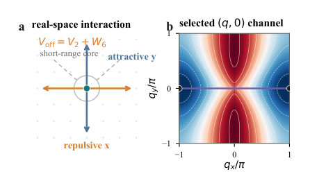
<figcaption class="paper-figure-caption"><b>Fig 1.</b> FIG. 1. Interaction-selected stripe channel. (a) The off-site interaction is repulsive along x, attractive along y, and has a short-range repulsive core. (b) The momentum- space off-site kernel, eVoff(q), has a low axial (q, 0) channel, while onsite U does not choose the ordering direction. In (b), colors show the relative value of eVoff(q) after subtracting its Brillouin-zone average; the low axial region marks the selected (q, 0) channel.</figcaption>
</figure>
<figure class="paper-figure-card">
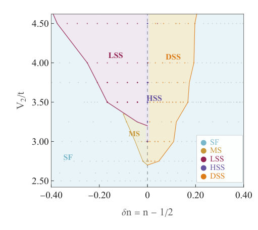
<figcaption class="paper-figure-caption"><b>Fig 2.</b> FIG. 2. Fixed-shape phase diagram. Phase assignments in the (δn, η) plane, with δn = n −1/2, η = V2/t, and fixed ratios U/V2 = 30/7, W6/V2 = 3/7. Small gray dots denote simulated points; colored points and domains summarize the identified phases: superfluid (SF), mobile stripe (MS), locked stripe solid (LSS), half-filled stripe solid (HSS), and doped stripe supersolid (DSS). The HSS forms the central parent at δn = 0.</figcaption>
</figure>
<figure class="paper-figure-card">

<figcaption class="paper-figure-caption"><b>Fig 3.</b> FIG. 4. Soft-core-to-hard-core control. (a) At fixed V2/t = 3.5 and W6/t = 1.5, the half-filled HSS parent re- mains at δn = 0, while the particle-side DSS window ap- pears for U/t = 12, 15, 18 but is absent for U/t = 24, 30, 60 and hard-core. Error bars in (a), shown only on the plotted phase-window boundaries, denote the boundary-location un- certainty set by adjacent sampled filling sectors. (b) At sam- pled particle-side sectors near δn ≃1/24, the left axis shows the onsite pair weight D = L−2 P</figcaption>
</figure>
<figure class="paper-figure-card">

<figcaption class="paper-figure-caption"><b>Fig 4.</b> FIG. 5. Selected-stripe and leading-wave-vector diag- nostics. These results use the L = 24, η = 3.5 fixed-shape cut, (U, V2, W6)/t = (15, 3.5, 1.5), also shown in Fig. 3. Nor- malized channel weights and the leading folded wave vec- tor show that the ordered states are carried by the same interaction-selected (q, 0) stripe channel. Here S⋆ comp = max(S⋆ y, S⋆ d) denotes the larger of the transverse and diag- onal competing-channel peaks. The plotted qfold x and qfold y are the two components of qfold 1 . The dominant structure-factor weight remains in the x-stripe channel, while qfold x drifts with filling and qfold y remains near zero.</figcaption>
</figure>
</div>

<p><strong>Summary.</strong> The paper theoretically investigates stripe supersolidity in a Bose-Hubbard model governed by engineered non-axisymmetric dipolar interactions. It demonstrates that the system's response to doping is highly asymmetric: particle doping stabilizes a true supersolid phase with finite superfluidity, whereas hole doping leads to locked, less coherent states. This behavior hinges critically on the presence of soft-core doublon fluctuations enabled by onsite interaction $U$.</p>
<p><strong>Why it may be interesting.</strong> This work provides a detailed theoretical framework for realizing and controlling exotic quantum phases like stripe supersolids in controllable lattice systems, directly relevant to cold atom simulations using dipolar interactions.</p>
<details>
<summary>Detailed structure</summary>
<p><strong>Main problem.</strong> The study investigates whether doping defects (vacancies/interstitials) can become phase coherent without melting the ordered background in a supersolid state, and how this coherence depends on particle vs. hole doping.</p>
<p><strong>Main result.</strong> The system exhibits an asymmetry: particle doping leads to a stripe supersolid with finite superfluid stiffness ($
ho_s&gt;0$) and compressibility ($\kappa&gt;0$), while hole doping results in locked commensurate solids with vanishing $
ho_s$.</p>
<p><strong>Method.</strong> Path-integral Quantum Monte Carlo method utilizing the worm algorithm for simulations.</p>
<p><strong>Model / system.</strong> A soft-core Bose-Hubbard model on a square lattice featuring an engineered non-axisymmetric dipolar interaction ($V_{ij} \propto (x^2-y^2)/r^5 + 1/r^6$).</p>
<p><strong>Key observables.</strong> Compressibility ($\kappa$), Superfluid Stiffness ($
ho_s$), Double Occupancy ($D$), and the structure factor $S(q)$ to confirm $(q,0)$ stripe order.</p>
<p><strong>Important parameters / regimes.</strong> The ratio $U/t$ (controlling onsite softness) and the doping level $\delta n = n - 1/2$.</p>
<p><strong>Assumptions / limitations.</strong> The analysis assumes that the off-site dipolar kernel selects a fixed $(q,0)$ stripe channel, while the finite onsite interaction ($U$) controls defect mobility.</p>
<p><strong>Figures summary.</strong> Figures illustrate the asymmetric phase diagram in doping space ($\delta n$), showing plateaus on the hole side versus continuous supersolid formation on the particle side. Tables summarize how this DSS state vanishes when the soft-core doublon channel is suppressed by increasing $U/t$ towards the hard-core limit.</p>
<p><strong>Paper structure.</strong> The paper systematically analyzes the Bose-Hubbard model, first establishing the role of the engineered dipolar interaction in selecting stripe order. It then compares the physical response to particle vs. hole doping, using $
ho_s$, $\kappa$, and $D$ as diagnostics to prove the one-sided nature of the supersolid phase.</p>
</details>
<details>
<summary>Abstract</summary>
<p>A supersolid combines density order with phase coherence, and doped lattice solids ask whether added defects can become coherent without melting the ordered background. We study a soft-core Bose-Hubbard model with isotropic hopping and an engineered non-axisymmetric dipolar interaction, \(V_{ij}=V_2(x_{ij}^2-y_{ij}^2)/r_{ij}^5+W_6/r_{ij}^6\), where the sign-changing \(d_{x^2-y^2}\) component selects a fixed \((q,0)\) stripe channel and the \(W_6/r^6\) core stabilizes the short-distance attractive branch. Using sign-problem-free quantum Monte Carlo method with worm algorithm, we find that the half-filled stripe parent responds asymmetrically to doping: the hole side forms locked commensurate stripe solids with vanishing superfluid stiffness, whereas the particle side forms a stripe supersolid with finite compressibility \(κ>0\), finite superfluid stiffness \(ρ_s>0\), and enhanced double occupancy \(D\). Keeping the same off-site kernel while increasing \(U/t\) toward the hard-core limit shows that the particle-side supersolid disappears once doublon-like defects are projected out. Thus the engineered dipolar kernel selects the fixed \((q,0)\) stripe channel, while onsite softness selects the phase-coherent defect sector.</p>
</details>
<p><sub><a href="#top">↑ back to top</a></sub></p>

<p><a id="paper-2608.13088"></a></p>
<h3 id="quantifying-nonclassicality-in-qubit-systems-via-positive-operator-valued-measures"><a href="http://arxiv.org/abs/2608.13088v1">Quantifying nonclassicality in qubit systems via positive operator-valued measures</a></h3>
<p><strong>Authors:</strong> Abdul Sattar Khan, Mehdi Abdi<br>
<strong>Type:</strong> theory · <strong>Category:</strong> quantum information and computing · <strong>PDF:</strong> <a href="https://arxiv.org/pdf/2608.13088v1">https://arxiv.org/pdf/2608.13088v1</a><br>
<strong>Analysis basis:</strong> full PDF text, analyzed in chunks
<strong>Topic relevance:</strong> 🔥 <code>quantum measurements</code> <strong>4/5</strong> · <code>correlated / nonlocal dissipation</code> <strong>1/5</strong> · <code>methods for driven-dissipative</code> <strong>1/5</strong></p>
<div class="figure-strip-hint">↔ Scroll figures horizontally</div>
<div class="paper-figures-scroll">
<figure class="paper-figure-card">

<figcaption class="paper-figure-caption"><b>Fig 1.</b> FIG. 1. (Color online) Nonclassicality witness WQ for projective measurements. Panel (a) shows</figcaption>
</figure>
<figure class="paper-figure-card">

<figcaption class="paper-figure-caption"><b>Fig 2.</b> FIG. 2. (Color online) Nonclassicality witness WQ for POVM measurements. Panel (a) shows WQ</figcaption>
</figure>
<figure class="paper-figure-card">

<figcaption class="paper-figure-caption"><b>Fig 3.</b> FIG. 3. (Color online) Three-dimensional plot of the nonclassicality witness WQ(α0, χ) for a qubit</figcaption>
</figure>
<figure class="paper-figure-card">

<figcaption class="paper-figure-caption"><b>Fig 4.</b> FIG. 4. (Color online) Comparison between projective measurements (az = 1, solid blue line)</figcaption>
</figure>
</div>

<p><strong>Summary.</strong> The authors introduce a novel, operational witness ($W_Q$) to quantify nonclassicality in qubits by examining violations of Kolmogorov consistency across sequential measurements. They show that while projective measurements fail to detect nonclassicality for diagonal states, generalizing to POVMs allows detection via measurement unsharpness. This provides a robust tool connecting quantum resource theory to experimental measurement protocols.</p>
<p><strong>Why it may be interesting.</strong> This work provides an experimentally accessible diagnostic tool that extends beyond standard state-based measures by linking nonclassicality detection directly to the nature (unsharpness) of the quantum measurements themselves.</p>
<details>
<summary>Detailed structure</summary>
<p><strong>Main problem.</strong> The paper aims to develop an operational measure, a nonclassicality witness ($W_Q$), for qubit systems based on detecting violations of Kolmogorov consistency conditions in sequential measurements.</p>
<p><strong>Main result.</strong> The witness reveals that non-projective Positive Operator-Valued Measures (POVMs) can detect nonclassicality even when the initial state is diagonal, achieving a maximum value of $1/4$.</p>
<p><strong>Method.</strong> The methodology involves deriving the witness from joint probability distributions calculated using measurement update rules for both projective measurements and general POVMs.</p>
<p><strong>Model / system.</strong> The system analyzed is a qubit undergoing evolution coupled to an environment (bath), modeled with pure dephasing dynamics. The analysis uses concepts linking Kolmogorov consistency, Leggett-Garg inequalities, and POVM theory.</p>
<p><strong>Key observables.</strong> Nonclassicality witness ($W_Q$), measurement unsharpness parameter ($a_z$), joint probabilities $P(x_2, t_2; x_1, t_1)$.</p>
<p><strong>Important parameters / regimes.</strong> Initial state populations ($\alpha_0, \alpha_1$), dephasing factor ($\chi(\Delta t)$), and the POVM unsharpness parameter ($a_z$).</p>
<p><strong>Assumptions / limitations.</strong> The analysis assumes a Markovian process and models the dynamics using pure dephasing. It compares projective measurements to general POVMs.</p>
<p><strong>Figures summary.</strong> Figures illustrate the dependence of $W_Q$ on initial populations, dephasing factors, and the measurement unsharpness parameter ($a_z$), showing that $W_Q$ is zero for ideal projective measurements but positive for generalized POVMs.</p>
<p><strong>Paper structure.</strong> The paper introduces the witness based on Kolmogorov violation, derives it for two-measurement scenarios, compares results for projective vs. general POVMs, and establishes the maximum value of the witness by connecting it to measurement unsharpness.</p>
</details>
<details>
<summary>Abstract</summary>
<p>We introduce an operational measure of nonclassicality for qubit systems based on the violation of Kolmogorov consistency conditions in sequential measurements. In contrast to previous work by Milz et al.~\cite{Milz-2020}, who characterized classicality via NCGD maps, and Sakuldee et al.~\cite{Sakuldee-2022a, Sakuldee-2022b}, who studied quantum correlations under measurement disturbance, our witness explicitly quantifies nonclassicality in terms of the POVM unsharpness parameter $a_z$. For projective measurements on an initially diagonal state, the witness vanishes identically, showing that such measurements cannot reveal nonclassicality. However, by generalizing to positive operator-valued measures (POVMs), we find that non-projective measurements can reveal nonclassicality even for diagonal initial states. We derive explicit expressions for the witness for general initial states, including coherences, and show that its maximum value is $1/4$, which is a new result achieved for unbiased POVMs, maximal dephasing, and equal initial populations. Our results connect Kolmogorov consistency, Leggett-Garg inequalities, and POVMs, providing an experimentally accessible tool for detecting nonclassicality in qubit systems with potential applications in quantum technology certification.</p>
</details>
<p><sub><a href="#top">↑ back to top</a></sub></p>

<p><a id="paper-2608.12454"></a></p>
<h3 id="floquet-quasiparticle-poisoning-of-frozonium"><a href="http://arxiv.org/abs/2608.12454v1">Floquet Quasiparticle Poisoning of Frozonium</a></h3>
<p><strong>Authors:</strong> Haoyu Guo, Debanjan Chowdhury<br>
<strong>Type:</strong> theory · <strong>Category:</strong> other · <strong>PDF:</strong> <a href="https://arxiv.org/pdf/2608.12454v1">https://arxiv.org/pdf/2608.12454v1</a><br>
<strong>Analysis basis:</strong> full PDF text, analyzed in chunks
<strong>Topic relevance:</strong> <code>driven-dissipative phase transition</code> <strong>3/5</strong> · <code>methods for driven-dissipative</code> <strong>3/5</strong> · <code>Keldysh / 2PI / non-Gaussian methods</code> <strong>2/5</strong> · <code>non-equilibrium universality</code> <strong>2/5</strong> · <code>analog quantum simulation</code> <strong>1/5</strong> · <code>correlated / nonlocal dissipation</code> <strong>1/5</strong> · <code>quantum measurements</code> <strong>1/5</strong> · <code>scars &amp; prethermalization</code> <strong>1/5</strong></p>
<div class="figure-strip-hint">↔ Scroll figures horizontally</div>
<div class="paper-figures-scroll">
<figure class="paper-figure-card">

<figcaption class="paper-figure-caption"><b>Fig 1.</b> FIG. 1. Schematic of a driven fluxonium circuit (left) and the two quasiparticle (QP) poisoning channels (right) considered in this work. Left: Circuit comprising a capacitor with charg- ing energy EC, a small junction with Josephson energy EJ, and a superinductance with inductive energy EL, threaded by a time-dependent external flux φext(t). Right: Density of states with gap ∆in the superconducting junction with a chemical potential µ, showing drive-assisted Cooper-pair breaking (red) and tunneling of a pre-existing nonequilibrium QP (green).</figcaption>
</figure>
<figure class="paper-figure-card">

<figcaption class="paper-figure-caption"><b>Fig 2.</b> FIG. 2. Pair-generation rate landscape for fluxonium branch 0, which denotes the Floquet eigenstate assigned to the Magnus ground state by the one-to-one overlap procedure. (a) Quasiparticle generation rate Γpair 0 as a function of phase-drive amplitude, ϕac, and drive frequency, fd, plotted on a log scale. The top-right arrow marks the location of the freezing point ϕac ≃2.405. (b) Fixed-ϕac cuts compare Γpair 0 computed from ED (solid lines) with the Magnus reference (dashed lines); see [50] for more details. The reference captures the high-frequency magnitude and the discontinuous openings at the 2∆/n thresholds, while visible deviations appear below about 20 GHz. At fixed fd = 28 GHz, a...</figcaption>
</figure>
<figure class="paper-figure-card">

<figcaption class="paper-figure-caption"><b>Fig 3.</b> FIG. 3. Quasiparticle tunneling rate landscape for fluxonium branch 0, tracked using the same numerical procedure as in Fig. 2. (a) Γtunnel 0 /xqp as a function of phase-drive amplitude, ϕac, and drive frequency, fd, plotted on a log scale. In addition to the isolated resonances studied in Fig. 2, Γtunnel 0 contains connected resonance curves whose structure is organized by the Magnus spectrum and hybridization among resonant channels. (b) A one-photon resonance whose location is accurately predicted by the bare Magnus condition EM 19 −EM 0 = hfd. The dashed M19/1 locus follows the bright rate ridge. (c) The bare M11/1 and M22/2 loci meet at the freezing point as a consequence of frozonium...</figcaption>
</figure>
<figure class="paper-figure-card">

<figcaption class="paper-figure-caption"><b>Fig 4.</b> FIG. 4. Freezing-point operating tradeoff for an aluminum- based circuit with xqp = 10−6. (a) Pointwise drive-frequency scan in the (T1,01, 1 −¯F01) plane. Two proposed drive fre- quencies are highlighted. (b) Fine scan around 21.7 GHz re- veals two operating frequency intervals separated by a reso- nance. The black and purple curves show T1,01 and 1 −¯F01 on the left and right axes, respectively. The narrow fea- ture near 21.704 GHz is the nearest resolved resonance. The left and right highlighted frequencies are fd = 21.6785 GHz and 21.7290 GHz, respectively, placing them 25.5 MHz and 24.5 MHz from the nearest resonance.</figcaption>
</figure>
</div>

<p><strong>Summary.</strong> This paper analyzes quasiparticle poisoning in a periodically driven fluxonium superconducting circuit. It demonstrates that while periodic driving can induce dynamical freezing of the Josephson nonlinearity, this process does not eliminate dissipation from quasiparticles. The authors provide a framework to identify optimal operating regimes by balancing the desired coherent state against detrimental resonance-enhanced quasiparticle loss.</p>
<p><strong>Why it may be interesting.</strong> This work is highly relevant for AMO/open quantum systems as it models dissipation (quasiparticle loss) in a driven superconducting circuit, providing concrete guidelines for engineering coherence by managing external driving fields.</p>
<details>
<summary>Detailed structure</summary>
<p><strong>Main problem.</strong> The study investigates quasiparticle poisoning effects in a superconducting fluxonium circuit subjected to periodic driving, determining if dynamic freezing suppresses dissipation.</p>
<p><strong>Main result.</strong> Dynamic freezing does not generically suppress quasiparticle-induced dissipation; optimal operation requires balancing the drive's tendency toward dynamical freezing against unavoidable quasiparticle loss mechanisms.</p>
<p><strong>Method.</strong> The authors calculate quasiparticle transition rates using Floquet Fermi's Golden Rule, comparing full Floquet treatments with approximations derived from the Magnus expansion.</p>
<p><strong>Model / system.</strong> The system is a fluxonium superconducting circuit driven by a time-dependent external magnetic flux. The analysis uses the driven Hamiltonian and examines pair generation and pre-existing quasiparticle tunneling channels.</p>
<p><strong>Key observables.</strong> Quasiparticle generation rate ($\Gamma_{	ext{pair}}^0$), quasiparticle tunneling rate ($\Gamma_{	ext{tunnel}}^0$), lifetime ($T_{1,01}$), and fidelity ($ar{F}_{01}$).</p>
<p><strong>Important parameters / regimes.</strong> Drive frequency ($f_d$), drive amplitude ($\phi_{ac}$), charging energy ($E_C$), Josephson energy ($E_J$), and inductive energy ($E_L$).</p>
<p><strong>Assumptions / limitations.</strong> The analysis often compares results to the Magnus Hamiltonian reference, and later sections assume quasiparticles are promptly removed from the junction or use Boltzmann occupation benchmarks.</p>
<p><strong>Figures summary.</strong> Figures illustrate the landscape of pair generation rates vs. drive parameters, resonance structures in tunneling rates organized by the Floquet-Magnus spectrum, and a trade-off plot showing lifetime versus fidelity as a function of drive frequency.</p>
<p><strong>Paper structure.</strong> The paper first establishes the model using the driven Hamiltonian, then calculates both pair-breaking and tunneling rates using Floquet theory. It analyzes how these rates depend on drive parameters, contrasting results with simpler approximations to map out safe operating regimes.</p>
</details>
<details>
<summary>Abstract</summary>
<p>Periodic driving can suppress the Josephson nonlinearity of a fluxonium superconducting circuit, producing a nearly harmonic Floquet spectrum at isolated freezing points [K. Lewellen et al., Newton 2, 100434 (2026)]. Here we show that this dynamically frozen behavior does not generically suppress quasiparticle-induced dissipation in the resulting frozonium circuit. We formulate quasiparticle processes in the frozonium using a Floquet framework and analyze both drive-assisted Cooper-pair breaking and tunneling of pre-existing quasiparticles. Pair generation is controlled by gap-breaking thresholds at high drive frequencies, while multiphoton resonances produce pronounced rate enhancements at lower frequencies. Quasiparticle tunneling exhibits connected resonance structures organized by the harmonic Floquet-Magnus spectrum near the freezing point, with resonant hybridization generating characteristic avoided crossings. Our results show that suitable operating regimes must balance dynamical freezing against quasiparticle loss and provide a framework for identifying experimental drive parameters away from harmful resonances.</p>
</details>
<p><sub><a href="#top">↑ back to top</a></sub></p>

<p><a id="paper-2608.13533"></a></p>
<h3 id="quantum-simulation-of-non-markovian-dynamical-systems"><a href="http://arxiv.org/abs/2608.13533v1">Quantum simulation of non-Markovian dynamical systems</a></h3>
<p><strong>Authors:</strong> Abtin Ameri, Arkopal Dutt, Hari Krovi<br>
<strong>Type:</strong> theory · <strong>Category:</strong> quantum information and computing · <strong>PDF:</strong> <a href="https://arxiv.org/pdf/2608.13533v1">https://arxiv.org/pdf/2608.13533v1</a><br>
<strong>Analysis basis:</strong> full PDF text, analyzed in chunks
<strong>Topic relevance:</strong> <code>Keldysh / 2PI / non-Gaussian methods</code> <strong>3/5</strong> · <code>correlated / nonlocal dissipation</code> <strong>3/5</strong> · <code>methods for driven-dissipative</code> <strong>3/5</strong> · <code>driven-dissipative phase transition</code> <strong>2/5</strong> · <code>analog quantum simulation</code> <strong>1/5</strong> · <code>non-equilibrium universality</code> <strong>1/5</strong> · <code>quantum measurements</code> <strong>1/5</strong></p>
<div class="figure-strip-hint">↔ Scroll figures horizontally</div>
<div class="paper-figures-scroll">
<figure class="paper-figure-card">

<figcaption class="paper-figure-caption"><b>Fig 1.</b> Figure 1: Numerical simulation of du</figcaption>
</figure>
<figure class="paper-figure-card">

<figcaption class="paper-figure-caption"><b>Fig 2.</b> Figure 2: Illustration of the linear coarse-graining formalism for a three-dimensional dynamical system. While the full dynamics is Markovian and described by a linear ODE system, the projected dynamics is non-Markovian and described by a linear VIDE.</figcaption>
</figure>
</div>

<p><strong>Summary.</strong> This paper tackles the challenge of simulating non-Markovian dynamics using quantum computation by developing algorithms for Volterra integro-differential equations (VIDEs). It achieves exponential speedup when memory effects are weak ($M < 1$) or when the system's kernel has a specific, structured form. This expands the scope of quantum simulation beyond traditional Markovian models into complex physical systems like those found in open quantum dynamics.</p>
<p><strong>Why it may be interesting.</strong> This work directly addresses simulating complex open quantum systems where memory effects are crucial, pushing the boundary of what quantum computers can simulate efficiently beyond simple Markovian master equations.</p>
<details>
<summary>Detailed structure</summary>
<p><strong>Main problem.</strong> Developing quantum algorithms capable of simulating non-Markovian dynamical systems, which retain memory of past system states.</p>
<p><strong>Main result.</strong> Efficient quantum algorithms are developed for linear Volterra integro-differential equations (VIDEs) under specific conditions ($M < 1$ or structured kernels), achieving exponential speedup over classical methods in certain regimes.</p>
<p><strong>Method.</strong> The approach involves recasting the VIDE into a solvable linear system, utilizing Quantum Linear System Algorithms (QLSA) when memory effects are weak, or employing 'Markovianization' to convert the problem into an ODE set for structured kernels.</p>
<p><strong>Model / system.</strong> The focus is on linear Volterra integro-differential equations (VIDEs), which model non-Markovian dynamics where the evolution depends on a convolution memory kernel $K(t-	au)$. Applications include open quantum systems described by the Mori-Zwanzig formalism.</p>
<p><strong>Key observables.</strong> Quantum state encoding of the system's state over a time interval or at a specific final time T.</p>
<p><strong>Important parameters / regimes.</strong> The Memory Strength Parameter ($M$), which characterizes the ratio of memory term strength to Markovian dissipation; regimes include $M < 1$ (short-term memory) and $M \geq 1$.</p>
<p><strong>Assumptions / limitations.</strong> For general kernels, simulation is conjectured to be intractable when $M \geq 1$; efficiency for large $M$ relies on the kernel being decomposable as a sum of exponentials (SOE).</p>
<p><strong>Paper structure.</strong> The paper first establishes the limitation of existing Markovian simulation algorithms, then develops efficient quantum circuits for VIDEs when $M < 1$, and finally introduces 'Markovianization' to extend this capability to structured kernels even when $M \geq 1$.</p>
</details>
<details>
<summary>Abstract</summary>
<p>Existing quantum algorithms for simulating dynamical systems -- from Hamiltonian simulation to linear and nonlinear differential equations solvers -- simulate Markovian dynamics, in which the system's future evolution depends solely on its current state. We turn our attention to developing quantum algorithms for non-Markovian dynamical systems where the system's future evolution depends on its past history and thus has memory. Specifically, we develop efficient algorithms for linear Volterra integro-differential equations (VIDEs) with a convolution memory kernel that output a quantum state encoding the state description over a time interval or at a particular time. Given efficient circuits for the problem inputs, our algorithms achieve an exponential speedup in system size over existing classical algorithms.   We develop an algorithm for general kernels assuming that $\textsf{M} < 1$, where $\textsf{M}$ characterizes the strength of the memory term relative to the dissipation of the Markovian part of the dynamics. We complement this with lower bounds for general-kernel VIDEs when $\textsf{M} \geq 1$, showing that the problem becomes intractable for a family of systems. However, by specializing to structured kernels which admit concise decompositions over exponentials, we develop efficient quantum algorithms even when $\textsf M \geq 1$ by converting the VIDE into a larger set of ODEs, a procedure which we call Markovianization. As an application of the overall framework, we discuss the Mori-Zwanzig formalism used in open quantum systems and fluid dynamics. Overall, our results expand the range of dynamical systems that quantum computers can simulate efficiently.</p>
</details>
<p><sub><a href="#top">↑ back to top</a></sub></p>

<p><a id="paper-2608.12453"></a></p>
<h3 id="boundary-phases-and-thermodynamics-of-the-kondo-spin-math295math-chain-from-overscreened-kondo-to-boundary-bound-states"><a href="http://arxiv.org/abs/2608.12453v1">Boundary phases and thermodynamics of the Kondo spin-$s$ chain: from overscreened Kondo to boundary-bound states</a></h3>
<p><strong>Authors:</strong> Abay Zhakenov, Pradip Kattel, Andreas Gleis, Natan Andrei<br>
<strong>Type:</strong> theory · <strong>Category:</strong> statistical mechanics · <strong>PDF:</strong> <a href="https://arxiv.org/pdf/2608.12453v1">https://arxiv.org/pdf/2608.12453v1</a><br>
<strong>Analysis basis:</strong> full PDF text, analyzed in chunks
<strong>Topic relevance:</strong> <code>Keldysh / 2PI / non-Gaussian methods</code> <strong>3/5</strong> · <code>methods for driven-dissipative</code> <strong>3/5</strong> · <code>driven-dissipative phase transition</code> <strong>2/5</strong> · <code>non-equilibrium universality</code> <strong>2/5</strong> · <code>Frenkel-Kontorova</code> <strong>1/5</strong> · <code>quantum measurements</code> <strong>1/5</strong> · <code>scars &amp; prethermalization</code> <strong>1/5</strong></p>
<div class="figure-strip-hint">↔ Scroll figures horizontally</div>
<div class="paper-figures-scroll">
<figure class="paper-figure-card">

<figcaption class="paper-figure-caption"><b>Fig 1.</b> FIG. 1: Spin-s chain with a spin- 1</figcaption>
</figure>
<figure class="paper-figure-card">

<figcaption class="paper-figure-caption"><b>Fig 2.</b> FIG. 2: Phase diagram of the spin-s Takhtajan–Babujian chain with a spin- 1</figcaption>
</figure>
<figure class="paper-figure-card">

<figcaption class="paper-figure-caption"><b>Fig 3.</b> FIG. 3: Functions ηn(λ) obtained through the numerical solutions of the TBA equations for S = 3/2. For finite temperature T values, the functions smoothly change from the limit values ηT =∞ n to the minimum at λ = 0. At small temperatures T ≪1, the functions are almost flat for |λ| ≪ln(T/2π) and equal in that region to another limit value ηT =0 n . The flattening can be already seen to start happening to η3 function at T = 1 on the plots. As the temperature T increases, the driving term in the TBA equations gets more irrelevant, and functions tend to flatten out to their at-infinity values ηT =∞ n (compare dashed and solid lines corresponding to T = 5 and T = 1, respectively).</figcaption>
</figure>
<figure class="paper-figure-card">

<figcaption class="paper-figure-caption"><b>Fig 4.</b> FIG. 4: The energy of the base states of the boundary string and higher-order boundary string towers with re- spect to the string tower. The fundamental boundary- string tower (solid blue line) exists everywhere but in the phase AF1 (J/g ∈(0, 4 s(s+1)) and is gapped with Eγ [see Eq. (72)] in the phases AF3 and F2. The boundary string tower (dashed red line) is absent in the phase AF1 and the first part of the phase AF2, it gets gapped only in the phase AF3.</figcaption>
</figure>
<figure class="paper-figure-card">

<figcaption class="paper-figure-caption"><b>Fig 5.</b> FIG. 5: Impurity contribution to the entropy for a spin- s = 1 chain. We show Simp(T) = Sbulk+imp(T)−Sbulk(T) for antiferromagnetic impurity coupling in panel (a) and ferromagnetic impurity coupling in panel (b). Dashed lines show the TBA result, solid lines show TEBD data, and dots show XTRG data. The MPO calculations use Nbulk = 100 bulk sites, and data are shown only above the finite-size cutoff determined from the com- parison of Nbulk and Nbulk + 1 chains. For s = 1, the positive-coupling phase boundaries are at Jimp = 2 and Jimp = 3.2, while the ferromagnetic F1–F2 boundary is at Jimp = −16/7 ≃−2.29. The nonmonotonic entropy dips at stronger coupling reflect the formation of boundary-...</figcaption>
</figure>
</div>

<p><strong>Summary.</strong> This paper develops a comprehensive theory for the boundary physics of a Kondo spin-$s$ chain by combining Boundary Conformal Field Theory with exact Bethe Ansatz and TBA methods. It maps out a rich phase diagram featuring multiple impurity-bound states that reorganize the system's excitation spectrum into distinct towers. The results unify descriptions of screening mechanisms, providing quantitative predictions for thermodynamic quantities like entropy across various coupling regimes.</p>
<p><strong>Why it may be interesting.</strong> This work provides a powerful, unified theoretical toolkit (combining CFT, integrability, and advanced statistical mechanics) to analyze complex quantum impurity problems in 1D correlated systems, which is highly relevant for understanding open quantum systems dynamics.</p>
<details>
<summary>Detailed structure</summary>
<p><strong>Main problem.</strong> The study investigates the boundary phases and thermodynamic properties of a Kondo impurity coupled to a strongly correlated spin-$s$ chain, particularly focusing on transitions between overscreened Kondo behavior and localized boundary-bound states.</p>
<p><strong>Main result.</strong> The system exhibits a rich phase diagram with five distinct regimes (AF1-AF3, F1, F2), characterized by the restructuring of excitation towers in the Hilbert space. The analysis provides a unified description using CFT, Bethe Ansatz, and TBA methods.</p>
<p><strong>Method.</strong> A combination of Boundary Conformal Field Theory (BCFT) for low-energy universality, exact Bethe Ansatz solutions, generalized Thermodynamic Bethe Ansatz (TBA), and tensor-network simulations are employed to analyze the system across different temperature and coupling regimes.</p>
<p><strong>Model / system.</strong> The model is a spin-$1/2$ impurity coupled to the boundary of a strongly correlated spin-$s$ Takhtajan–Babujian chain, described by an integrable Hamiltonian. The low-energy physics is related to a perturbed SU(2) WZW conformal field theory.</p>
<p><strong>Key observables.</strong> Impurity entropy (showing nonmonotonic temperature dependence), impurity spectral function (exhibiting sharp threshold features), and the structure of excitation towers.</p>
<p><strong>Important parameters / regimes.</strong> The coupling ratios ($J/g$) define five distinct phases ($    ext{AF}1-   ext{AF}3,   ext{F}1,    ext{F}2$), which dictate whether the system is in an overscreened Kondo regime or a localized boundary-bound state.</p>
<p><strong>Assumptions / limitations.</strong> The analysis relies on mapping the problem to integrable models solvable by Bethe Ansatz techniques and developing generalized TBA frameworks to handle multi-tower structures.</p>
<p><strong>Figures summary.</strong> Figure 2 details the phase diagram showing coupling ranges for five phases, while Table I provides quantitative fingerprints (entropy, residual values) associated with these distinct boundary configurations.</p>
<p><strong>Paper structure.</strong> The paper systematically develops the theoretical framework by first establishing the Hamiltonian and using BCFT for the weak-coupling limit. It then employs exact Bethe Ansatz methods to derive energy eigenvalues, leading into a generalized TBA formulation that accounts for multiple excitation towers across all coupling regimes.</p>
</details>
<details>
<summary>Abstract</summary>
<p>We study a spin-$\frac12$ impurity coupled to the boundary of a strongly correlated spin-$s$ Takhtajan--Babujian chain, an integrable model whose low-energy physics is described by a perturbed $SU(2)_{2s}$ Wess--Zumino--Witten conformal field theory. While boundary conformal field theory determines the low-energy universality class of the weak-coupling regime, exact Bethe Ansatz methods reveal a sequence of boundary quantum phase transitions in which impurity-bound states emerge and reorganize the Hilbert space into multiple excitation towers built on distinct boundary configurations. This tower restructuring provides the organizing principle for a rich boundary phase diagram extending beyond the conventional Kondo regime. Weak antiferromagnetic coupling realizes the overscreened $2s$-channel Kondo universality class, whereas stronger couplings generate localized boundary modes and qualitatively new screening mechanisms. To describe the resulting thermodynamics, we develop a generalized thermodynamic Bethe Ansatz framework that captures the multi-tower structure across all regimes. The impurity entropy reproduces the boundary conformal field theory prediction in the overscreened Kondo regime but develops pronounced nonmonotonic temperature dependence once boundary-bound states appear, in quantitative agreement with large-scale finite-temperature matrix-product-operator simulations. Complementary dynamical calculations reveal sharp threshold features in the impurity spectral function that directly track the underlying tower structure. Together, boundary conformal field theory, exact Bethe Ansatz, generalized thermodynamic Bethe Ansatz, and tensor-network simulations provide a unified description of impurity screening, boundary-bound-state formation, and excitation-tower reconstruction in a correlated spin-$s$ chain.</p>
</details>
<p><sub><a href="#top">↑ back to top</a></sub></p>

<p><a id="paper-2608.13080"></a></p>
<h3 id="local-and-quasilocal-conservation-laws-of-three-state-irf-cellular-automata-and-their-quantum-deformations"><a href="http://arxiv.org/abs/2608.13080v1">Local and quasilocal conservation laws of three-state IRF cellular automata and their quantum deformations</a></h3>
<p><strong>Authors:</strong> Tomaž Prosen<br>
<strong>Type:</strong> theory · <strong>Category:</strong> statistical mechanics · <strong>PDF:</strong> <a href="https://arxiv.org/pdf/2608.13080v1">https://arxiv.org/pdf/2608.13080v1</a><br>
<strong>Analysis basis:</strong> full PDF text, analyzed in chunks
<strong>Topic relevance:</strong> <code>methods for driven-dissipative</code> <strong>3/5</strong> · <code>scars &amp; prethermalization</code> <strong>3/5</strong> · <code>driven-dissipative phase transition</code> <strong>2/5</strong> · <code>non-equilibrium universality</code> <strong>2/5</strong> · <code>analog quantum simulation</code> <strong>1/5</strong> · <code>correlated / nonlocal dissipation</code> <strong>1/5</strong> · <code>quantum measurements</code> <strong>1/5</strong></p>
<div class="figure-strip-hint">↔ Scroll figures horizontally</div>
<div class="paper-figures-scroll">
<figure class="paper-figure-card">

<figcaption class="paper-figure-caption"><b>Fig 1.</b> Figure 1: One full time step of the IRF circuit (either classical or quantum, as defined in the text). Panel (a) shows the commuting even and odd layers of three-site control–active–control gates. Panel (b) is the equivalent face representation on the staggered square lattice. Time runs upward.</figcaption>
</figure>
<figure class="paper-figure-card">

<figcaption class="paper-figure-caption"><b>Fig 2.</b> Figure 2: Light-cone trajectories of the two classical rules from the same random lower- boundary initial condition. Species 1 and 2 are blue and red; vacancies are omitted (white).</figcaption>
</figure>
<figure class="paper-figure-card">

<figcaption class="paper-figure-caption"><b>Fig 3.</b> Figure 3: (a) Moduli of the distinct nonzero branches of Tλ on −1/2 ≤λ ≤1/2; the black curve is the spectral radius. (b) The physically relevant localization length of the connected quasi-local densities, ξdens = 2/[−log δ+]. The endpoint-centered bilinear form annihilates the γ± projectors exactly, and the full norm sequence obeys the two-root formula (63).</figcaption>
</figure>
<figure class="paper-figure-card">

<figcaption class="paper-figure-caption"><b>Fig 4.</b> Figure 4: Support structure of the logarithmic tower. The displayed bars show the even- anchored classes of support 2n + 2; their reflected partners have support label 2n + 3 in the same fixed-anchor convention. The labels Qr refer to the canonical new conserved charge whose minimal support label in Ref. [5] is r. The first two log-derivative orders produce Q4, Q5, Q6, Q7 modulo lower-support charges.</figcaption>
</figure>
</div>

<p><strong>Summary.</strong> This paper rigorously analyzes the conservation laws of three-state IRF cellular automata and their quantum deformations using advanced matrix product methods. It establishes a lower bound on the system's maximal sound speed by analyzing conserved charges derived from both classical rules. The findings provide deep insights into the underlying integrability structure, particularly concerning the emergence of quasi-local invariants in the quantum regime.</p>
<p><strong>Why it may be interesting.</strong> The rigorous mathematical framework used to constrain conserved quantities in integrable or near-integrable lattice models is highly relevant to understanding dynamics in many-body quantum systems, particularly those exhibiting quasi-periodicity or emergent symmetries.</p>
<details>
<summary>Detailed structure</summary>
<p><strong>Main problem.</strong> The study focuses on determining the local and quasilocal conservation laws governing three-state Interaction-Round-a-Face (IRF) cellular automata, both classically and through their quantum deformations.</p>
<p><strong>Main result.</strong> The analysis established a rigorous lower bound for the maximal Euler speed ($\sqrt{3/23}$) for the species-flipping rule, strongly supporting the completeness of known sound-active charges. Furthermore, the quantum deformation yields exact low-bond-dimension invariant states (scar candidates).</p>
<p><strong>Method.</strong> The research employs patch-matrix-product methods (PMPA) combined with hydrodynamic projection techniques to analyze conserved quantities and their associated Euler velocities.</p>
<p><strong>Model / system.</strong> The model is a three-state IRF cellular automaton defined on a lattice, featuring two specific rules: species-preserving ($\chi_p$) and species-flipping ($\chi_f$). These classical systems are extended into a coherent quantum deformation.</p>
<p><strong>Key observables.</strong> Quasi-local conservation laws, Euler velocities (e.g., $\pm\sqrt{3/23}$), low-entanglement invariant states, and the Mazur bound for diagonal quasi-local charges.</p>
<p><strong>Important parameters / regimes.</strong> The analysis involves a one-parameter family of conserved laws and parameters related to the structure of the PMPA ansatz ($\lambda \in I^*$).</p>
<p><strong>Assumptions / limitations.</strong> The authors note that while they provide strong support for known sound-active charges, unconditional completeness of the full conserved space is not claimed.</p>
<p><strong>Figures summary.</strong> Figure 1 illustrates one time step of the IRF circuit using three-site gates; tables summarize the rules for $\chi_p$ and $\chi_f$.</p>
<p><strong>Paper structure.</strong> The paper systematically analyzes the classical conservation laws using PMPA, derives explicit algebraic forms for conserved quantities across multiple orders (Chunks 3 &amp; 4), and then extends these findings to characterize low-energy states and charges in the quantum deformation.</p>
</details>
<details>
<summary>Abstract</summary>
<p>Using patch-matrix-product methods, we study two reversible three-state interaction-round-a-face cellular automata introduced by Klobas and Prosen [J. Phys. A 55, 094003 (2022)] - the species-preserving and species-flipping rules - and a coherent quantum deformation interpolating between them. Within an explicit translationally invariant ansatz, the two classical rules share a one-parameter family of quasi-local conservation laws with an auxiliary-dimension-three realization. Every regular member is also the first centered logarithmic derivative of an analytic auxiliary-dimension-two family passing through the identity observable. On the closed span of this family and the three elementary local charges, the only nonzero Euler velocities are $\pm\sqrt{3/23}$. Consequently, $\sqrt{3/23}$ is a rigorous lower bound on the maximal Euler speed in any larger conserved sector. For the species-flipping rule, this value agrees with the reported extrapolated value $0.361$ of Klobas and Prosen, strongly supporting completeness of the known sound-active charges. The species-preserving rule admits, in addition, a staggered generating family whose logarithmic derivatives form an infinite tower of strictly local charges. In the quantum deformation, the same algebraic structures yield exact low-bond-dimension invariant states (scar candidates), exponentially long-lived quasi-local quasimodes, and diagonal quasi-local charges that produce a nonzero Mazur bound after projection away from the three elementary local charges.</p>
</details>
<p><sub><a href="#top">↑ back to top</a></sub></p>

<p><a id="paper-2608.12791"></a></p>
<h3 id="thermodynamics-of-learning-a-typed-four-component-accounting-of-memory-fit-and-value"><a href="http://arxiv.org/abs/2608.12791v1">Thermodynamics of Learning: A Typed Four-Component Accounting of Memory, Fit, and Value</a></h3>
<p><strong>Authors:</strong> Akihito Sudo<br>
<strong>Type:</strong> theory · <strong>Category:</strong> statistical mechanics · <strong>PDF:</strong> <a href="https://arxiv.org/pdf/2608.12791v1">https://arxiv.org/pdf/2608.12791v1</a><br>
<strong>Analysis basis:</strong> full PDF text, analyzed in chunks
<strong>Topic relevance:</strong> <code>non-equilibrium universality</code> <strong>3/5</strong> · <code>Keldysh / 2PI / non-Gaussian methods</code> <strong>2/5</strong> · <code>driven-dissipative phase transition</code> <strong>2/5</strong> · <code>methods for driven-dissipative</code> <strong>2/5</strong> · <code>quantum measurements</code> <strong>2/5</strong> · <code>correlated / nonlocal dissipation</code> <strong>1/5</strong> · <code>scars &amp; prethermalization</code> <strong>1/5</strong></p>
<div class="figure-strip-hint">↔ Scroll figures horizontally</div>
<div class="paper-figures-scroll">
<figure class="paper-figure-card">

<figcaption class="paper-figure-caption"><b>Fig 1.</b> FIG. 1. The typed four-component accounting. Boxes are the component currencies (Table I) together with the record stock JD and the shifted value; arrows denote theo- rems or routes that hold between the accounts—or, where so labeled, their proven absence—not additions. The ledger frame displays the universal identity in its energy-typed form, kTσM + kT I(M; D | M ′) = kT ∆+JD + kT Σtotal [Eq. (21)]: the C1 entry on the K2 route is the gross acquisition charge kT ∆+JD (distinct from the signed stock change kT ∆JD, which is not an acquisition charge), the recycling credit van- ishes under condition (f), and all information-typed quantities enter with their explicit kT conversion. The...</figcaption>
</figure>
<figure class="paper-figure-card">

<figcaption class="paper-figure-caption"><b>Fig 2.</b> FIG. 2. Fit–value alignment: the two-layer domain in which fit ranking and value ranking coincide (Main Theo- rem III(i)), whose boundary is marked by the one-time-pad witness (Proposition 3), and the four paired interventions S/B/A/R (parts (ii)–(vi)): each double arrow is a setting pair in which changing that coordinate alone reverses or restores the ranking. The neutrality coordinate (γ, device AC′) alone carries a one-condition-drop necessity witness (part (vii)); no uniform necessity is claimed for the other three. The four axes are not claimed to classify all misalignment phenomena.</figcaption>
</figure>
</div>

<p><strong>Summary.</strong> This paper introduces a rigorous, four-component thermodynamic accounting system to quantify the difference between what is merely stored (memory) and what truly retains operational value in a learning device. By defining 'value' as an achievable work gap, it provides exact theorems governing how this value changes under task shifts or updates. It offers a powerful theoretical tool for analyzing information processing beyond standard generalization bounds.</p>
<p><strong>Why it may be interesting.</strong> While abstract, the framework provides a deep thermodynamic analogy for information processing. Concepts like 'operational capital' and 'work gap' resonate with non-equilibrium statistical mechanics approaches used to study computation or energy dissipation in complex systems.</p>
<details>
<summary>Detailed structure</summary>
<p><strong>Main problem.</strong> The paper develops a typed accounting framework to rigorously separate the physical quantity recorded by a finite-state learning device (memory) from the actual operational value that will persist or be useful for future tasks.</p>
<p><strong>Main result.</strong> It establishes precise, non-trivial bounds and exchange rates governing how 'value' is retained or capitalized during task-distribution shifts, showing that simple measures like record correlation do not capture this full operational value.</p>
<p><strong>Method.</strong> The authors employ a novel four-component accounting system (fit functional, record-correlation stock, update ledger, and operational capital value) derived from information theory and thermodynamics principles.</p>
<p><strong>Model / system.</strong> The model is an abstract, finite-state learning device operating under defined protocols ($ ext{Protb}$), involving memory states ($M$), training records ($D$), and future task distributions ($T$). It analyzes the work gap between informed and blind protocol classes.</p>
<p><strong>Key observables.</strong> Operational capital value $V(M; T, b)$, record-correlation stock $I(M; D)$, capitalization efficiency $\eta_{	ext{cap}}$, retention gap $L_{	ext{gen}}$, and the four component currencies ($C_1$ through $C_4$).</p>
<p><strong>Important parameters / regimes.</strong> Budget ($b$), temperature ($kT$), memory size ($n$), and various functional parameters defining stability regimes (e.g., $\mathrm{flat}^{*}$ regime).</p>
<p><strong>Assumptions / limitations.</strong> The results are strictly limited to finite-state learning devices operating within a fixed, explicit operational framework; the paper explicitly states it is not a theory of statistical generalization.</p>
<p><strong>Figures summary.</strong> Figures and tables define the four component currencies and illustrate theorems connecting these accounts, such as showing how different protocols yield distinct energy bounds ($\Delta V$).</p>
<p><strong>Paper structure.</strong> The structure builds from defining the four-component accounting system to proving three main theorems: Separation (I), Capitalization Ledger (II), and Value Retention (III). The analysis uses specific computational witnesses (S, B, A) to derive these rigorous statements.</p>
</details>
<details>
<summary>Abstract</summary>
<p>What a finite learning device has recorded and what will hold value for it on future tasks are not the same quantity. We develop a typed accounting for finite-state learning devices that separates four components: a training-side fit functional $Φ_{\mathrm{fit}}$, the record-correlation stock $J_{D}=I(M;D)$, an update-side search ledger $σ_{M}$, and an operational capital value $V(M;T,b)$. This value is the work gap between an informed protocol class and a blind class obtained by deleting the memory-read port and re-optimizing from scratch. (I) Separation: for every $n$, there is a device family on which record correlation and world correlation grow by $n\ln 2$ while the capital gain is exactly zero. In the $\mathrm{flat}^{*}$ regime, data-free updates never increase $V$. (II) Capitalization ledger: an exact $\mathrm{flat}^{*}$ extraction identity and a universal ledger identity give, for (F5$'$)-stable $M$-local updates under a no-discarded-record-correlation condition (f), the bound $η_{\mathrm{cap}}\le 1$ for the capitalization efficiency $η_{\mathrm{cap}}=ΔV/(k T\,σ_{M})$, together with necessary and sufficient conditions for equality. (III) Value retention: for the retention gap $L_{\mathrm{gen}}$ and retention ratio $ρ_{\mathrm{gen}}$ (the former carries no sign constraint; the latter is defined for positive training-side value and is not confined to $[0,1]$) we give a two-layer alignment domain: an exact exchange rate between value and the side-information-adjusted record fit $I(M';D\mid Y)$ without any record-side-information independence assumption, and a raw record-stock exchange rate under a joint side-information neutrality condition $(M,D)\perp Y$, whose boundary is marked by an explicit one-time-pad witness. These are statements about finite-device value retention under task-distribution shift, not a theory of statistical generalization.</p>
</details>
<p><sub><a href="#top">↑ back to top</a></sub></p>

<p><a id="paper-2608.12942"></a></p>
<h3 id="time-ordered-free-energy-in-correlated-quantum-systems-an-agentic-approach"><a href="http://arxiv.org/abs/2608.12942v1">Time-ordered free energy in correlated quantum systems: An agentic approach</a></h3>
<p><strong>Authors:</strong> Ruo Cheng Huang, Isha Singh Le Xue, Yuxuan Qu, Paul M. Riechers, Varun Narasimhachar, Mile Gu<br>
<strong>Type:</strong> theory · <strong>Category:</strong> statistical mechanics · <strong>PDF:</strong> <a href="https://arxiv.org/pdf/2608.12942v1">https://arxiv.org/pdf/2608.12942v1</a><br>
<strong>Analysis basis:</strong> full PDF text, analyzed in chunks
<strong>Topic relevance:</strong> <code>correlated / nonlocal dissipation</code> <strong>3/5</strong> · <code>quantum measurements</code> <strong>3/5</strong> · <code>Keldysh / 2PI / non-Gaussian methods</code> <strong>2/5</strong> · <code>driven-dissipative phase transition</code> <strong>2/5</strong> · <code>analog quantum simulation</code> <strong>1/5</strong> · <code>methods for driven-dissipative</code> <strong>1/5</strong> · <code>non-equilibrium universality</code> <strong>1/5</strong></p>
<div class="figure-strip-hint">↔ Scroll figures horizontally</div>
<div class="paper-figures-scroll">
<figure class="paper-figure-card">

<figcaption class="paper-figure-caption"><b>Fig 1.</b> Figure 1: (a) The perturbed coin process is an example of a quantum hidden state source. It possesses two latent states s and s′ (nodes). The directed edges describe its dynamics: an edge from s to s′ labeled p : σ indicates that a source in state s has probability p to transition to s′ and emit state σ. (b) A causal network depicting the interaction between the hidden quantum process (top, red) and the sequential agent (bottom, blue). The agent does not have access to st and thus can only select an extraction method At based on its current memory state Kt−1. The extracted work Wt acts as an observable, allowing the agent to update its memory to Kt.</figcaption>
</figure>
<figure class="paper-figure-card">

<figcaption class="paper-figure-caption"><b>Fig 2.</b> Figure 2: Comparison of asymptotic work-extraction rates in units of kBT. Rates are plotted as a function of the transition probability p (x-axis) and the overlap between emitted quantum states r (y-axis). (a) Work rate lost due to causal constraints, given by fnoneq −fTO. (b) Performance advantage of the optimal policy over a greedy strategy, given by fTO −wLO.</figcaption>
</figure>
<figure class="paper-figure-card">

<figcaption class="paper-figure-caption"><b>Fig 3.</b> Figure 3: Relation between how much energy an agent is willing to locally sacrifice vs. uncertainty. The energetic price of information, quantified by D(ξηϵ∥ρΛ∗(η)) (y- axis), represents how much energy an agent is willing to sacrifice when extracting work from the current quantum system. Meanwhile, h2(ηϵ)(x-axis) represents the agent’s uncertainty about the underlying source. Panels (a) and (b) show scatter plots of how these quantities relate for various parameters of a perturbed coin source. (a) Varying transition probability p ∈{0.1, 0.2, 0.3, 0.4, 0.5} for a fixed overlap r = 0.1. (b) Varying overlap r ∈ {0.1, 0.3, 0.5, 0.7, 0.9} for a fixed transition probability p = 0.2. In both...</figcaption>
</figure>
<figure class="paper-figure-card">

<figcaption class="paper-figure-caption"><b>Fig 4.</b> Figure 4: Graph of reward and dissipation, conditioned on the belief state K = µ0 = (1/2, 1/2). The action space is parametrized by θ ∈[0, 2π]. The blue line represents V1(K0 = µ0) as defined in Eq. (F2), and the black line represents the dissipation incurred at the second time step, in Eq. (F1). The blue and black dotted lines correspond to the optimal actions taken at t = 1 and t = 2, respectively.</figcaption>
</figure>
<figure class="paper-figure-card">

<figcaption class="paper-figure-caption"><b>Fig 5.</b> Figure 5: The gap between the non-equilibrium free energy and the TOFE (panels (a) and (c)) shows good agreement with the analytical causal dissipation (panels (b) and (d)). The top row corresponds to a time horizon of L = 3, while the bottom row is for L = 4.</figcaption>
</figure>
</div>

<p><strong>Summary.</strong> This paper introduces Time-Ordered Free Energy (TOFE) as the fundamental measure of available free energy when extracting work from correlated quantum states under causal limitations. It develops an optimal strategy using dynamic programming that scales linearly with sequence length, providing a powerful tool for analyzing non-Markovian quantum processes.</p>
<p><strong>Why it may be interesting.</strong> This work provides a rigorous, information-theoretic framework for quantifying irreversibility and extractable energy in open quantum systems subject to realistic measurement constraints, which is highly relevant to non-equilibrium thermodynamics in AMO physics.</p>
<details>
<summary>Detailed structure</summary>
<p><strong>Main problem.</strong> The core problem is determining the maximum work an agent can extract from a sequence of quantum states generated by a hidden, non-Markovian process while adhering to strict causal constraints.</p>
<p><strong>Main result.</strong> They introduce Time-Ordered Free Energy (TOFE) as the fundamental measure for available free energy in such systems and develop an optimal strategy solvable via dynamic programming in linear time complexity.</p>
<p><strong>Method.</strong> The methodology employs a resource-theoretic framework, using dynamic programming over belief states derived from Bayesian inference to find the optimal causal policy.</p>
<p><strong>Model / system.</strong> The system models quantum state sequences generated by a Hidden Markov Model (HMM), where an agent interacts online with the emitted quantum system.</p>
<p><strong>Key observables.</strong> Time-Ordered Free Energy (TOFE), Causal Dissipation ($\delta$), and various work extraction rates ($    ext{f}<em ext_LO="ext{LO">{    ext{TO}}$, $    ext{w}</em>$).}</p>
<p><strong>Important parameters / regimes.</strong> Sequence length $L$, temperature parameter $eta$, and the belief state uncertainty quantified by entropy.</p>
<p><strong>Assumptions / limitations.</strong> The agent operates under strict causality (actions depend only on past observations), and the DP approach assumes belief states are sufficient statistics for optimization.</p>
<p><strong>Figures summary.</strong> Figures illustrate the perturbed coin process source, causal networks showing agent-system interaction, and comparisons of work deficit versus calculated causal dissipation across different sequence lengths.</p>
<p><strong>Paper structure.</strong> The paper builds from defining the physical problem (causal work extraction) to developing the computational solution (DP in $O(L)$), establishing key theoretical relationships like Causal Dissipation ($\delta$), and finally addressing implementation details via spectral tagging for unitary updates.</p>
</details>
<details>
<summary>Abstract</summary>
<p>How much work can an agent extract from a temporal sequence of quantum states when it can only operate online under causal constraints---deciding which energy extraction method to use with knowledge of what it has observed before? Here, we study this problem in the context of quantum state sequences that are potentially non-Markovian---generated by some underlying hidden Markov machine that the agent cannot observe. Using techniques from dynamic programming and computational mechanics, we present a method to identify the provably optimal agent strategy, with time complexity that scales linearly with sequence length. This motivates us to introduce the maximum work such agents can extract---time-ordered free energy(TOFE)---as a fundamental measure of free energy available in a temporally correlated quantum system subject to causal considerations.</p>
</details>
<p><sub><a href="#top">↑ back to top</a></sub></p>

<p><a id="paper-2608.12803"></a></p>
<h3 id="a-finite-window-recovery-hierarchy-for-local-quantum-memory"><a href="http://arxiv.org/abs/2608.12803v1">A Finite-Window Recovery Hierarchy for Local Quantum Memory</a></h3>
<p><strong>Authors:</strong> Zheng An, Dongyang Cao, Jiangyu Cui<br>
<strong>Type:</strong> theory · <strong>Category:</strong> disordered systems and neural networks · <strong>PDF:</strong> <a href="https://arxiv.org/pdf/2608.12803v1">https://arxiv.org/pdf/2608.12803v1</a><br>
<strong>Analysis basis:</strong> full PDF text, analyzed in chunks
<strong>Topic relevance:</strong> <code>quantum measurements</code> <strong>3/5</strong> · <code>analog quantum simulation</code> <strong>2/5</strong> · <code>driven-dissipative phase transition</code> <strong>2/5</strong> · <code>methods for driven-dissipative</code> <strong>2/5</strong> · <code>correlated / nonlocal dissipation</code> <strong>1/5</strong> · <code>non-equilibrium universality</code> <strong>1/5</strong> · <code>scars &amp; prethermalization</code> <strong>1/5</strong></p>
<div class="figure-strip-hint">↔ Scroll figures horizontally</div>
<div class="paper-figures-scroll">
<figure class="paper-figure-card">

<figcaption class="paper-figure-caption"><b>Fig 1.</b> FIG. 1. Local variational recovery operationalizes finite-window recoverability with strictly local resources. (a) Protocol: prepare the target qubit in one of six probe states while the remaining qubits are initialized in a fixed product-state background, evolve under the many-body dynamics of interest, apply a local decoder Vθ on a radius-r recovery window, and measure target- qubit Pauli operators. (b) Channel viewpoint: many-body dynamics deforms the local output geometry of the probe ensemble, and the optimized decoder partially restores it. (c) Conceptual distinction: under strong scrambling, relevant information spreads beyond the accessible window and local recovery fails, whereas...</figcaption>
</figure>
<figure class="paper-figure-card">

<figcaption class="paper-figure-caption"><b>Fig 2.</b> FIG. 2. Hierarchy-guided carrier-deletion repair from a finite surrounding halo. (a) Radius-2 recovery hierarchy in the original task, comparing the target-site optimum Qopt 0 , the operational depth-6 score Qshallow 2 , and the same-window optimum Qopt 2 ; the inset shows the certified gain ∆cert 2 . (b) Carrier-deletion protocol: after the many-body evolution, the target carrier is reset and the radius-3 surrounding halo is decoded back to the target register. (c) Shallow-only reset-erasure selection scan over disorder strength and Floquet depth; the star marks the frozen held-out working point. (d) Held-out subwindow test at the frozen point. The full-halo shallow decoder exceeds the...</figcaption>
</figure>
<figure class="paper-figure-card">

<figcaption class="paper-figure-caption"><b>Fig 3.</b> FIG. 3. Alternative diagnostics do not isolate the same operational distinction. (a) Disorder profiles of target-site persistence and certified finite-window gain after normalizing each median curve by its own maximum, making the shape difference directly visible on a common scale. (b) Reconstructed-channel coherent information for the target site and the five-site window. (c) Normalized coherent-information increment ∆Ic,2 compared with the normalized certified gain. The local observable and the tomographic comparator both respond to memory retained near the target, but neither isolates the locality-constrained channel-recovery question addressed by Qshallow 2 and ∆cert 2 .</figcaption>
</figure>
<figure class="paper-figure-card">

<figcaption class="paper-figure-caption"><b>Fig 4.</b> Figure 4 addresses the deployment question directly. For N = 24, the strongest intermediate-disorder signal occurs near W ≈3.2–3.6 at D = 20–40; for N = 32, the median gain peaks near W ≈4.4 at D = 20 and near W ≈3.6 at D = 30; and for N = 40, the peak remains in the crossover-to-strong-disorder window. On the subset where the same-window optimum is evaluated, the shal- low decoder still accesses a substantial fraction of the locally available memory, with typical η2 values of about 0.65–0.85 for N = 32 and about 0.55–0.80 for N = 40. These data indicate that the positive radius-2 certified gain is not specific to the N = 12 exact-diagonalization instance.</figcaption>
</figure>
<figure class="paper-figure-card">

<figcaption class="paper-figure-caption"><b>Fig 5.</b> FIG. 4. Larger-system tensor-network deployment of the finite-window recoverability framework. (a)–(c) Median certified finite-window gain ∆cert 2 = Qshallow 2 −Qopt 0 versus disorder strength for N = 24, 32, 40 at representative Floquet depths D = 20, 30, 40; shaded bands denote the IQR over 32 disorder realizations.</figcaption>
</figure>
</div>

<p><strong>Summary.</strong> The paper introduces 'finite-window recoverability' as a benchmark to quantify if quantum information seemingly lost from a target qubit is actually displaced into neighboring degrees of freedom. Using a disordered kicked-Ising chain, the authors demonstrate that bounded-depth local control can successfully diagnose this residual information, establishing a crucial diagnostic tool for off-site quantum memory.</p>
<p><strong>Why it may be interesting.</strong> This work provides a rigorous, resource-constrained diagnostic tool for characterizing quantum memory in complex, noisy environments typical of solid-state or engineered quantum systems.</p>
<details>
<summary>Detailed structure</summary>
<p><strong>Main problem.</strong> The study develops a benchmark, finite-window recoverability, to determine if quantum information initially stored locally on a qubit remains accessible after apparent loss due to dynamics.</p>
<p><strong>Main result.</strong> The authors establish that local control can diagnose whether information is merely displaced into nearby degrees of freedom or truly lost, showing positive certified gains in disordered systems.</p>
<p><strong>Method.</strong> They introduce an operational channel benchmark comparing optimal recovery (unrestricted) against shallow-depth variational recovery using a localized window decoder.</p>
<p><strong>Model / system.</strong> The primary testbed is a disordered kicked-Ising Floquet chain, analyzed by considering the evolution over multiple Floquet periods and embedding the task in longer open chains.</p>
<p><strong>Key observables.</strong> Certified gain ($\Delta_{	ext{cert}}^r$), Shallow-accessibility fraction ($\eta^r$), and recovery fidelity ($Q$).</p>
<p><strong>Important parameters / regimes.</strong> Recovery radius ($r$), Decoder depth ($L$), Disorder strength ($W$), and Floquet period count ($D$).</p>
<p><strong>Assumptions / limitations.</strong> The definition of 'local quantum information' is operational, relying on the specified probe ensemble and local-access model.</p>
<p><strong>Figures summary.</strong> Figures illustrate optimization reliability across disorder strengths, compare shallow decoder performance against optimal CPTP benchmarks across varying resource limits (radius/depth), and show time-dependence robustness.</p>
<p><strong>Paper structure.</strong> The paper introduces the finite-window recoverability benchmark by defining three recovery metrics ($Q_{	ext{opt}}^0$, $Q_{	ext{shallow}}^r$, $Q_{	ext{opt}}^r$). It applies this to a disordered kicked-Ising chain, analyzing gains and accessibility fractions. Finally, it tests the concept on a carrier-deletion task.</p>
</details>
<details>
<summary>Abstract</summary>
<p>When quantum information initially stored in a local qubit disappears, it need not be lost: it may have moved into nearby degrees of freedom or become inaccessible to shallow local control. We introduce finite-window recoverability as an operational channel benchmark that separates these possibilities. It compares optimal recovery from the target site, recovery by a bounded-depth decoder on a finite window, and the unrestricted optimum for that window. Its operational component, local variational recovery, uses local state preparation, window-local control, and target-qubit Pauli readout to certify recoverable memory beyond the target and quantify how much of the same-window advantage is accessible to shallow control. In a disordered kicked-Ising Floquet chain, a depth-6 decoder on a five-site window realizes $Q^{\mathrm{opt}}_0<Q^{\mathrm{shallow}}_2<Q^{\mathrm{opt}}_2$ across the crossover regime, with positive certified gain for most disorder realizations and substantial shallow-accessibility fractions. The signal differs from target-site persistence and reconstructed coherent-information increments. Positive radius-2 gain also persists when the task is embedded in longer open chains using an independent tensor-network backend. Guided by this hierarchy, we test a carrier-deletion task in which the original target register is reset after the dynamics. A depth-8 decoder repairs the input from a radius-3 surrounding halo with held-out median $F_{\mathrm{avg}}=0.758$, above the single-qubit classical benchmark $2/3$, and outperforms optimal one-, two-, and three-site halo-subwindow counterfactuals. These results establish finite-window recovery as a local-control benchmark for off-site quantum memory, diagnosing both where local quantum information remains and whether bounded-depth control can refocus it.</p>
</details>
<p><sub><a href="#top">↑ back to top</a></sub></p>
<hr>
<p>
<a href="index.html">← Index</a>
 · <a href="papers_01.html">← Previous</a> · <a href="papers_03.html">Next →</a>
</p>
<hr>

</body>
</html>
